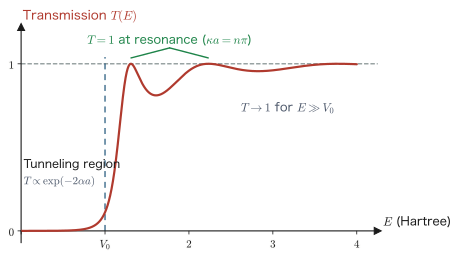
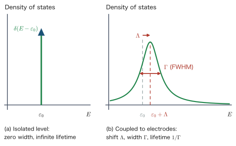

Chapter 17The Nonequilibrium Green's Function Method and Quantum Transport
The electronic structures treated so far in this book have all been those of an equilibrium state. The Hohenberg–Kohn theorems (Chapter 9) speak about the ground state, the Kohn–Sham equations (Chapter 10) give the ground-state density, and even the molecular dynamics of the previous chapter assumed that the electron system is in its ground state at every instant. What happens inside an electronic device, however, is not equilibrium. If a battery is connected across the two ends, the left electrode and the right electrode have different electrochemical potentials, and electrons keep flowing steadily from left to right. The electron system is then neither in the ground state nor in thermal equilibrium: it is in a nonequilibrium steady state.
The aim of this chapter is to build up a framework that treats this nonequilibrium steady state from first principles—the nonequilibrium Green's function method (NEGF)—starting from an elementary one-dimensional scattering problem. The key idea is Landauer's insight that “conduction is transmission,” and the key tool is the Green's function that we learned in Chapter 13. We derive in full the procedure that folds the infinitely many degrees of freedom of the electrodes into a finite-size matrix called the self-energy, obtain the transmission formula $T = \mathrm{Tr}[\Gamma_L G_C \Gamma_R G_C^\dagger]$, and carry out an actual hand calculation for a one-dimensional chain model to confirm that it agrees with the answer of elementary scattering theory. Finally, we look at actual calculations combined with DFT—a magnetic tunnel junction and a graphene nanoribbon.
- The conditions under which the Drude model and Ohm's law hold, the mean free path, and the crossover to ballistic conduction
- The complete solution of the scattering problem for a one-dimensional rectangular barrier, and the proof of $T+R=1$ using the probability current density
- Derivation of the Landauer formula: the decisive mechanism of the cancellation between the one-dimensional density of states and the group velocity
- The conductance quantum $G_0 = 2e^2/h$, and the physics of the contact resistance that remains even for perfect transmission
- The procedure for deriving the self-energy from the inverse of a block matrix (Schur complement)
- The Caroli (Fisher–Lee) formula $T=\mathrm{Tr}[\Gamma_L G_C \Gamma_R G_C^\dagger]$ and a check on a one-dimensional chain
- The meaning and use of the nonequilibrium density matrix and the Keldysh equation $G^{<} = G^r \Sigma^{<} G^a$
- The self-consistency loop of the DFT-NEGF method, how the bias is imposed, and its known limitations
- The mechanism by which “symmetry determines the conduction” in Fe|MgO|Fe magnetic tunnel junctions and graphene nanoribbons
In this chapter, too, we basically use Hartree atomic units ($\hbar = m_e = e = 4\pi\varepsilon_0 = 1$, Chapter 1). The unit of energy is the hartree (1 hartree $= 27.211$ eV), and the unit of length is the bohr (1 bohr $= 0.5292$ Å $= 5.292\times10^{-11}$ m). For the expressions for current and conductance, however, we keep $e$ and $h$ ($=2\pi\hbar$) explicit, because the correspondence with experimental values is one of the themes of this chapter and because the combination $2e^2/h$ is the standard notation in the literature. To return to atomic units, set $e=1$, $\hbar=1$, and $h = 2\pi$. For example, the conductance quantum in atomic units is $G_0 = 2e^2/h = 1/\pi$.
17.1 Electrical Conduction at the Nanoscale
In this section we first check, by actually solving the Drude model, what assumptions underlie Ohm's law, which has been familiar to us since junior high school. We then see that when the length of the sample becomes shorter than the mean free path of the electrons, those assumptions break down, and the problem of conduction changes qualitatively from a problem of “resistivity” to a problem of “transmission probability.”
17.1.1 The Drude model and the conditions under which Ohm's law holds
Consider the picture in which an electron in a metal, while being accelerated by an external electric field $\bm{E}$, is scattered once on average every time $\tau$ and loses its momentum. Scattering occurs through collisions with impurities, lattice defects, grain boundaries, phonons, other electrons, and so on. We call $\tau$ the relaxation time. Expressing the effect of scattering by a “friction force proportional to the velocity, $-\bm{v}/\tau$” (note that this means following the average motion of a single electron; in atomic units $m_e=1$ and the charge of the electron is $-1$), the equation of motion is
$$ \begin{equation} \frac{\dd \bm{v}}{\dd t} = -\bm{E} - \frac{\bm{v}}{\tau} \label{eq:17-drude-eom} \end{equation} $$The first term on the right-hand side is the force $(-1)\times\bm{E}$ acting on a particle of charge $-1$, and the second term is the friction term. In the steady state $\dd\bm{v}/\dd t = \bm{0}$, so we immediately obtain the drift velocity
$$ \begin{equation} \bm{v}_{\mathrm{d}} = -\tau\,\bm{E} \label{eq:17-drude-vd} \end{equation} $$Letting $n$ be the electron number density, the current density is “charge $\times$ number density $\times$ velocity,” so
$$ \begin{align} \bm{j} &= (-1)\, n\, \bm{v}_{\mathrm{d}} \label{eq:17-drude-j-a}\\ &= (-1)\, n\, (-\tau \bm{E}) = n\tau\, \bm{E}. \label{eq:17-drude-j-b} \end{align} $$The first line is just the definition of the current density, and the second line is simply the substitution of Eq. \eqref{eq:17-drude-vd}. The minus sign appears twice and cancels, so the current flows in the same direction as the electric field. Comparing this with $\bm{j} = \sigma \bm{E}$, the electrical conductivity is
$$ \begin{equation} \sigma = n\tau \qquad\left(\text{in SI units, } \sigma = \frac{n e^2 \tau}{m_e}\right) \label{eq:17-drude-sigma} \end{equation} $$This is the Drude formula. The resistivity is $\rho = 1/\sigma$, and the resistance of a uniform sample of cross-sectional area $A$ and length $L$ is
$$ \begin{equation} R = \rho\,\frac{L}{A} \label{eq:17-ohm} \end{equation} $$Let us look at the result obtained here and sort out what assumptions were used. This will be the starting point of the whole chapter.
Physical Meaning: Ohm's law presupposes “many scatterings”
What Eq. \eqref{eq:17-ohm} asserts is that the resistance is proportional to the length. This comes from the picture that “if the sample is made twice as long, the number of scatterings is also doubled.” Conversely, only when electrons are scattered many times inside the sample does the local material constant $\rho$ have any meaning. It is meaningless to compute “resistivity × length” for a sample so short that no scattering occurs even once. Furthermore, the resistivity can be called a constant independent of position because the details of the individual scatterers are averaged out by a large number of scatterings (self-averaging). If there are only a few scatterings, the particular circumstances of which impurity sits where appear directly in the conductivity.
The distance an electron travels between one scattering and the next is called the mean free path $\lambda$. In a metal, the electrons that carry the current are those near the Fermi surface (Chapter 3), so their velocity is the Fermi velocity $v_{\mathrm{F}}$, and
$$ \begin{equation} \lambda = v_{\mathrm{F}}\, \tau \label{eq:17-mfp} \end{equation} $$Let us put in numbers.
Example: Mean free path of copper
The conductivity of copper at room temperature is $\sigma = 5.96\times10^{7}$ S/m, and the conduction electron density is $n = 8.5\times10^{28}$ m$^{-3}$. Solving the SI-unit Drude formula \eqref{eq:17-drude-sigma} for $\tau$ gives
$$ \begin{equation} \tau = \frac{m_e \sigma}{n e^2} = \frac{(9.109\times10^{-31})\times(5.96\times10^{7})}{(8.5\times10^{28})\times(1.602\times10^{-19})^2} = \frac{5.43\times10^{-23}}{2.18\times10^{-9}} = 2.5\times10^{-14}\ \text{s} \label{eq:17-cu-tau} \end{equation} $$that is, $\tau \simeq 25$ fs. Since the Fermi velocity of copper is $v_{\mathrm{F}} = 1.57\times10^{6}$ m/s,
$$ \begin{equation} \lambda = v_{\mathrm{F}}\tau = (1.57\times10^{6})\times(2.5\times10^{-14}) = 3.9\times10^{-8}\ \text{m} \simeq 39\ \text{nm}. \label{eq:17-cu-mfp} \end{equation} $$The mean free path of single-crystal silicon at room temperature is of the same order ($20$–$30$ nm). On the other hand, in a low-temperature, high-mobility GaAs/AlGaAs two-dimensional electron gas, impurity scattering and phonon scattering are almost entirely frozen out, so $\lambda$ can reach $10\ \mu$m or more.
17.1.2 Samples shorter than the mean free path: ballistic conduction
The channel length of transistors in integrated circuits has reached the $10$ nm range in the 2020s. As the estimate above shows, this is shorter than the mean free path of metals and semiconductors at room temperature. An electron then is never scattered even once between entering from one electrode and leaving into the other. This regime is called ballistic conduction.
A natural question arises here: if there is no scattering, is the resistance zero? The answer is “no.” And the answer to the question “then where does that resistance reside?” is the subject of the first half of this chapter. To anticipate, the resistance resides not inside the sample, but at the junction between the large electrodes, which have infinitely many conduction modes, and the narrow device region, which has only a small number of modes. Taking this view, the problem of conduction is translated into a quantum-mechanical scattering problem: “what is the probability that an electron wave can be transmitted through the device region?” This is Landauer's formulation, “conduction is transmission.”
17.1.3 What experiments show
Ballistic conduction is not a theoretical idealization. The following experiments demonstrate its existence.
- Quantum point contact. A metal gate electrode with a narrow gap is placed on top of a two-dimensional electron gas confined at the interface of a GaAs/AlGaAs heterostructure. When a negative voltage is applied to the gate, the electrons directly beneath it are expelled, and only a narrow passage a few tens of nm wide (a quantum point contact, QPC) remains in the gap region. If we measure the conductance while varying the width continuously with the gate voltage, it does not change continuously but instead changes in a staircase pattern in steps of integer multiples of $2e^2/h = 7.75\times10^{-5}$ S (van Wees et al. and Wharam et al., both in 1988).
- Gold atomic wire. When two gold tips are brought into contact and then slowly pulled apart, the contact thins down to a few atoms and then breaks. If the conductance is measured simultaneously while the contact is observed directly with a transmission electron microscope, the conductance becomes exactly $2e^2/h$ at the moment the contact is one atom thick, and it drops to $0$ when the contact breaks (Ohnishi, Kondo, and Takayanagi, 1998). A single atom acts as a single conduction channel.
- Single-molecule junction. Experiments in which a single organic molecule (benzenedithiol, alkanedithiol, etc.) is bridged between gold electrodes by chemical bonds and its conductance is measured became possible from the late 1990s. The conductance is small, $10^{-2}\,G_0$ or less, and either decays exponentially with the length of the molecule (tunneling conduction) or, for conjugated systems, becomes insensitive to the length. That “the resistance of a single molecule” becomes the measured quantity is precisely the world of nanoscale conduction.
- Magnetic tunnel junction. In a ferromagnet/insulator/ferromagnet sandwich, the resistance changes greatly depending on whether the magnetizations of the two ferromagnetic layers are parallel or antiparallel (the tunnel magnetoresistance effect). In Fe|MgO|Fe junctions, a magnetoresistance ratio exceeding $200\%$ is achieved at room temperature, and these junctions are in practical use as read heads of hard disks and as MRAM. We will see in Section 17.8 that the origin of this giant effect is the symmetry of the wave function.
None of these can be explained by the classical Drude picture. In what follows, we first solve the simplest one-dimensional scattering problem completely, and from it we build up the language of quantum transport.
17.2 The One-Dimensional Scattering Problem
In this section we solve, from beginning to end, the problem of a plane wave incident on a one-dimensional rectangular barrier. The resulting transmission $T(E)$ is the “protagonist” that will be substituted into the Landauer formula in the next section. We also define the probability current density and use its conservation to prove $T+R=1$. This conservation law will also play a decisive role when we solve the same problem again with Green's functions in Section 17.5.
17.2.1 Setup and matching conditions
A particle of mass $1$ (atomic units) moves in the potential
$$ \begin{equation} V(x) = \begin{cases} 0, & x \lt 0 \quad (\text{region I})\\ V_0, & 0 \le x \le a \quad (\text{region II})\\ 0, & x \gt a \quad (\text{region III}) \end{cases} \label{eq:17-barrier-pot} \end{equation} $$. In atomic units ($\hbar=1$, $m=1$), the time-independent Schrödinger equation is
$$ \begin{equation} -\frac{1}{2}\frac{\dd^2 \psi}{\dd x^2} + V(x)\,\psi = E\,\psi \label{eq:17-barrier-se} \end{equation} $$. Since $V$ is constant in each region, Eq. \eqref{eq:17-barrier-se} becomes the second-order linear differential equation with constant coefficients $\psi'' = -2(E-V)\psi$, and its solutions are superpositions of exponential functions. Define the wave numbers by
$$ \begin{equation} k = \sqrt{2E}\ \ (\text{regions I and III}), \qquad \kappa = \sqrt{2(E-V_0)}\ \ (\text{region II}) \label{eq:17-barrier-k} \end{equation} $$(if $E \lt V_0$, then $\kappa$ is purely imaginary, but as we will see later the formulas can be used as they are). The general solution can then be written as
$$ \begin{equation} \psi(x) = \begin{cases} e^{ikx} + r\,e^{-ikx}, & x \lt 0\\ A\,e^{i\kappa x} + B\,e^{-i\kappa x}, & 0 \le x \le a\\ t\,e^{ikx}, & x \gt a \end{cases} \label{eq:17-barrier-ansatz} \end{equation} $$. Three remarks are in order about the setting of the boundary conditions. First, since we are considering a plane wave of amplitude $1$ incident from the left, we fixed the coefficient of the right-going wave in region I to be $1$ (the overall normalization does not affect the transmission or the reflectivity). Second, the left-going wave $r e^{-ikx}$ in region I is the reflected wave. Third, we have placed only a right-going wave in region III. This is the scattering boundary condition that “no particle comes in from infinity on the right,” and it is this physical requirement that determines the solution uniquely.
Math Note: Why must $\psi$ and $\psi'$ be continuous?
At $x=0$ the potential jumps discontinuously from $0$ to $V_0$. Even so, the wave function and its first derivative are continuous. The reason is as follows. Rewriting the Schrödinger equation \eqref{eq:17-barrier-se} as $\psi'' = 2(V-E)\psi$ and integrating from $x=-\epsilon$ to $x=+\epsilon$, we obtain
$$ \begin{equation} \psi'(\epsilon) - \psi'(-\epsilon) = 2\int_{-\epsilon}^{\epsilon} \bigl(V(x)-E\bigr)\psi(x)\,\dd x . \label{eq:17-jump} \end{equation} $$The integrand on the right-hand side is bounded ($V$ has only a finite jump and does not diverge). The integral of a bounded function over an interval of width $2\epsilon$ is at most $2\epsilon \times (\text{upper bound})$, so it tends to $0$ as $\epsilon\to0$. Hence $\psi'$ is continuous. If $\psi'$ is continuous, then $\psi$, being its integral, is of course continuous as well. Conversely, if $V$ diverges like a delta function, $\psi'$ can become discontinuous (in that case the right-hand side of Eq. \eqref{eq:17-jump} remains finite).
17.2.2 Solving the matching conditions
We now determine the four unknowns $r, A, B, t$ from the four matching conditions. To keep the calculation transparent, we proceed in this order: first we express $A, B$ in terms of $t$ using the two conditions at $x=a$, and then we substitute the result into the two conditions at $x=0$.
Equating the second and third lines of \eqref{eq:17-barrier-ansatz} (and their derivatives), the continuity conditions at $x=a$ read
$$ \begin{align} A e^{i\kappa a} + B e^{-i\kappa a} &= t\, e^{ika}, \label{eq:17-match-a1}\\ i\kappa\left(A e^{i\kappa a} - B e^{-i\kappa a}\right) &= i k\, t\, e^{ika}. \label{eq:17-match-a2} \end{align} $$Dividing both sides of the second equation by $i$ and then by $\kappa$ gives $A e^{i\kappa a} - B e^{-i\kappa a} = (k/\kappa)\, t\, e^{ika}$. Adding and subtracting this equation and \eqref{eq:17-match-a1} side by side (the standard procedure for solving a $2\times2$ system of linear equations) gives
$$ \begin{align} 2 A e^{i\kappa a} &= t\,e^{ika}\left(1 + \frac{k}{\kappa}\right), \label{eq:17-match-A}\\ 2 B e^{-i\kappa a} &= t\,e^{ika}\left(1 - \frac{k}{\kappa}\right) \label{eq:17-match-B} \end{align} $$That is,
$$ \begin{equation} A = \frac{t}{2}\left(1+\frac{k}{\kappa}\right)e^{i(k-\kappa)a}, \qquad B = \frac{t}{2}\left(1-\frac{k}{\kappa}\right)e^{i(k+\kappa)a}. \label{eq:17-AB} \end{equation} $$Next we write down the continuity conditions at $x=0$:
$$ \begin{align} 1 + r &= A + B, \label{eq:17-match-01}\\ ik(1-r) &= i\kappa(A-B) \quad\Longleftrightarrow\quad k(1-r) = \kappa(A-B). \label{eq:17-match-02} \end{align} $$We substitute \eqref{eq:17-AB} into \eqref{eq:17-match-01}. Factoring out the common factor $t\,e^{ika}/2$, we obtain
$$ \begin{align} 1+r &= \frac{t\,e^{ika}}{2}\left[\left(1+\frac{k}{\kappa}\right)e^{-i\kappa a} + \left(1-\frac{k}{\kappa}\right)e^{i\kappa a}\right] \label{eq:17-c1-a}\\ &= \frac{t\,e^{ika}}{2}\left[\left(e^{i\kappa a}+e^{-i\kappa a}\right) + \frac{k}{\kappa}\left(e^{-i\kappa a}-e^{i\kappa a}\right)\right] \label{eq:17-c1-b}\\ &= \frac{t\,e^{ika}}{2}\left[2\cos\kappa a + \frac{k}{\kappa}\left(-2i\sin\kappa a\right)\right] \label{eq:17-c1-c}\\ &= t\,e^{ika}\left[\cos\kappa a - i\,\frac{k}{\kappa}\sin\kappa a\right]. \label{eq:17-c1} \end{align} $$From the first line to the second, we merely regrouped the terms in $e^{\pm i\kappa a}$. From the second line to the third, we used Euler's formula $e^{i\theta}+e^{-i\theta} = 2\cos\theta$, $e^{i\theta}-e^{-i\theta} = 2i\sin\theta$ (and hence $e^{-i\theta}-e^{i\theta} = -2i\sin\theta$). From the third line to the fourth, we merely canceled a factor of $2$.
Similarly, we substitute \eqref{eq:17-AB} into \eqref{eq:17-match-02}:
$$ \begin{align} k(1-r) &= \kappa\cdot\frac{t\,e^{ika}}{2}\left[\left(1+\frac{k}{\kappa}\right)e^{-i\kappa a} - \left(1-\frac{k}{\kappa}\right)e^{i\kappa a}\right] \label{eq:17-c2-a}\\ &= \kappa\cdot\frac{t\,e^{ika}}{2}\left[\left(e^{-i\kappa a}-e^{i\kappa a}\right) + \frac{k}{\kappa}\left(e^{-i\kappa a}+e^{i\kappa a}\right)\right] \label{eq:17-c2-b}\\ &= \kappa\cdot\frac{t\,e^{ika}}{2}\left[-2i\sin\kappa a + \frac{k}{\kappa}\,2\cos\kappa a\right] \label{eq:17-c2-c}\\ &= t\,e^{ika}\left[-i\kappa\sin\kappa a + k\cos\kappa a\right]. \label{eq:17-c2-d} \end{align} $$Finally, dividing both sides by $k$, we obtain
$$ \begin{equation} 1-r = t\,e^{ika}\left[\cos\kappa a - i\,\frac{\kappa}{k}\sin\kappa a\right]. \label{eq:17-c2} \end{equation} $$Comparing \eqref{eq:17-c1} and \eqref{eq:17-c2}, we see that they form a beautifully symmetric pair, differing only by the interchange of $k/\kappa$ and $\kappa/k$. When we add these two equations, $r$ drops out:
$$ \begin{align} 2 &= t\,e^{ika}\left[2\cos\kappa a - i\left(\frac{k}{\kappa}+\frac{\kappa}{k}\right)\sin\kappa a\right] \label{eq:17-sum-a}\\ &= t\,e^{ika}\left[2\cos\kappa a - i\,\frac{k^2+\kappa^2}{k\kappa}\sin\kappa a\right]. \label{eq:17-sum-b} \end{align} $$In the second line we put $k/\kappa+\kappa/k = (k^2+\kappa^2)/(k\kappa)$ over a common denominator. Hence the transmission amplitude is
$$ \begin{equation} t = \frac{2\,e^{-ika}}{2\cos\kappa a - i\,\dfrac{k^2+\kappa^2}{k\kappa}\,\sin\kappa a}. \label{eq:17-t-amp} \end{equation} $$Also, when we subtract \eqref{eq:17-c2} from \eqref{eq:17-c1}, we obtain $2r = t e^{ika}\bigl[-i(k/\kappa - \kappa/k)\sin\kappa a\bigr]$, that is,
$$ \begin{equation} r = -\frac{i}{2}\,t\,e^{ika}\,\frac{k^2-\kappa^2}{k\kappa}\,\sin\kappa a . \label{eq:17-r-amp} \end{equation} $$Let us compute the transmission $T = \abs{t}^2$. The denominator of \eqref{eq:17-t-amp} is a complex number with “real part $2\cos\kappa a$ and imaginary part $-\frac{k^2+\kappa^2}{k\kappa}\sin\kappa a$,” so the square of its absolute value is the sum of the squares of the two parts:
$$ \begin{align} \abs{t}^2 &= \frac{4}{4\cos^2\kappa a + \dfrac{(k^2+\kappa^2)^2}{k^2\kappa^2}\sin^2\kappa a} \label{eq:17-T-a}\\ &= \frac{4}{4\left(1-\sin^2\kappa a\right) + \dfrac{(k^2+\kappa^2)^2}{k^2\kappa^2}\sin^2\kappa a} \label{eq:17-T-b}\\ &= \frac{4}{4 + \left[\dfrac{(k^2+\kappa^2)^2}{k^2\kappa^2} - 4\right]\sin^2\kappa a} \label{eq:17-T-c}\\ &= \left[1 + \frac{(k^2+\kappa^2)^2 - 4k^2\kappa^2}{4k^2\kappa^2}\sin^2\kappa a\right]^{-1} \label{eq:17-T-d}\\ &= \left[1 + \frac{(k^2-\kappa^2)^2}{4k^2\kappa^2}\sin^2\kappa a\right]^{-1}. \label{eq:17-T-e} \end{align} $$From the first line to the second, we used $\cos^2 = 1-\sin^2$. From the second line to the third, we merely collected the coefficient of $\sin^2\kappa a$. From the third line to the fourth, we divided the numerator and denominator by $4$. From the fourth line to the fifth, we used the factorization $(k^2+\kappa^2)^2-4k^2\kappa^2 = (k^2-\kappa^2)^2$ (the square of a sum minus $4$ times the product equals the square of the difference).
Finally, we substitute \eqref{eq:17-barrier-k}. Since $k^2 = 2E$ and $\kappa^2 = 2(E-V_0)$, we have $k^2-\kappa^2 = 2V_0$ and $k^2\kappa^2 = 4E(E-V_0)$, so that
$$ \begin{equation} \frac{(k^2-\kappa^2)^2}{4k^2\kappa^2} = \frac{4V_0^2}{16\,E(E-V_0)} = \frac{V_0^2}{4E(E-V_0)} . \label{eq:17-Tcoef} \end{equation} $$Therefore the final result is as follows.
For $E \lt V_0$ (the tunneling region), it suffices to replace $\kappa = i\alpha$, with $\alpha = \sqrt{2(V_0-E)}$. Since $\sin(i\alpha a) = i\sinh(\alpha a)$, we have $\sin^2(\kappa a) = -\sinh^2(\alpha a)$, and since $E-V_0 = -(V_0-E)$, the signs in both the numerator and the denominator of the fraction are reversed and cancel each other, so that
follows. That this takes a finite value, that is, that a particle passes through a barrier that it cannot classically surmount, is what is called tunneling.
17.2.3 Probability current density and $T+R=1$
We have just used the words “transmission” and “reflectivity” for $\abs{t}^2$ and $\abs{r}^2$, but why does the square of an amplitude represent a probability? What guarantees this is the conservation of the probability current density. We now define the probability current density and show $T+R=1$ in two different ways.
Derivation: Probability current density and the continuity equation
We prepare the time-dependent Schrödinger equation (atomic units, one dimension)
$$ \begin{equation} i\,\frac{\partial \Psi}{\partial t} = -\frac{1}{2}\frac{\partial^2 \Psi}{\partial x^2} + V\Psi \label{eq:17-tdse} \end{equation} $$and its complex conjugate
$$ \begin{equation} -i\,\frac{\partial \Psi^*}{\partial t} = -\frac{1}{2}\frac{\partial^2 \Psi^*}{\partial x^2} + V\Psi^* \label{eq:17-tdse-cc} \end{equation} $$(since $V$ is real, it is unchanged by complex conjugation). We compute the time variation of the probability density $\rho = \abs{\Psi}^2 = \Psi^*\Psi$:
$$ \begin{align} \frac{\partial \rho}{\partial t} &= \frac{\partial \Psi^*}{\partial t}\Psi + \Psi^*\frac{\partial \Psi}{\partial t} \label{eq:17-cont-a}\\ &= \left[\frac{1}{-i}\left(-\frac{1}{2}\frac{\partial^2\Psi^*}{\partial x^2} + V\Psi^*\right)\right]\Psi + \Psi^*\left[\frac{1}{i}\left(-\frac{1}{2}\frac{\partial^2\Psi}{\partial x^2} + V\Psi\right)\right] \label{eq:17-cont-b}\\ &= \frac{i}{2}\left(\frac{\partial^2\Psi^*}{\partial x^2}\Psi - \Psi^*\frac{\partial^2\Psi}{\partial x^2}\right) - i\left(V\Psi^*\Psi - V\Psi^*\Psi\right) \label{eq:17-cont-c}\\ &= \frac{i}{2}\left(\frac{\partial^2\Psi^*}{\partial x^2}\Psi - \Psi^*\frac{\partial^2\Psi}{\partial x^2}\right). \label{eq:17-cont-d} \end{align} $$The first line is the product rule of differentiation. In the second line, we solved \eqref{eq:17-tdse} and \eqref{eq:17-tdse-cc} for $\partial\Psi/\partial t$ and $\partial\Psi^*/\partial t$ and substituted. In the third line, we used $1/i = -i$ and $1/(-i)=i$ to tidy up and grouped the potential terms. In the fourth line, the potential terms cancel exactly—this is a consequence of $V$ being real, and it is the reason probability is conserved.
Furthermore, the expression in parentheses in \eqref{eq:17-cont-d} can be rewritten as a total derivative. Indeed, by the product rule,
$$ \begin{align} \frac{\partial}{\partial x}\left(\frac{\partial\Psi^*}{\partial x}\Psi - \Psi^*\frac{\partial\Psi}{\partial x}\right) &= \frac{\partial^2\Psi^*}{\partial x^2}\Psi + \frac{\partial\Psi^*}{\partial x}\frac{\partial\Psi}{\partial x} - \frac{\partial\Psi^*}{\partial x}\frac{\partial\Psi}{\partial x} - \Psi^*\frac{\partial^2\Psi}{\partial x^2} \label{eq:17-cont-e}\\ &= \frac{\partial^2\Psi^*}{\partial x^2}\Psi - \Psi^*\frac{\partial^2\Psi}{\partial x^2} \label{eq:17-cont-e2} \end{align} $$(the two middle terms cancel), and this is exactly the expression in parentheses in \eqref{eq:17-cont-d}. Therefore
$$ \begin{align} \frac{\partial\rho}{\partial t} &= \frac{i}{2}\frac{\partial}{\partial x}\left(\frac{\partial\Psi^*}{\partial x}\Psi - \Psi^*\frac{\partial\Psi}{\partial x}\right) \label{eq:17-cont-f1}\\ &= -\frac{i}{2}\frac{\partial}{\partial x}\left(\Psi^*\frac{\partial\Psi}{\partial x} - \frac{\partial\Psi^*}{\partial x}\Psi\right) \label{eq:17-cont-f2}\\ &= -\frac{i}{2}\frac{\partial}{\partial x}\left[2i\,\mathrm{Im}\!\left(\Psi^*\frac{\partial\Psi}{\partial x}\right)\right] \label{eq:17-cont-f3}\\ &= -\frac{\partial}{\partial x}\left[\mathrm{Im}\!\left(\Psi^*\frac{\partial\Psi}{\partial x}\right)\right]. \label{eq:17-cont-f4} \end{align} $$The first line is obtained by substituting \eqref{eq:17-cont-e2} into \eqref{eq:17-cont-d}. In the second line, we reversed the sign of the expression in parentheses and pulled out an overall minus sign. In the third line, we used the fact that $z - z^* = 2i\,\mathrm{Im}\,z$ for the complex number $z = \Psi^*\partial_x\Psi$, and that $(\Psi^*\partial_x\Psi)^* = \Psi\,\partial_x\Psi^*$. The fourth line follows from $-\frac{i}{2}\times 2i = 1$. That is, the probability current density in the continuity equation $\partial_t\rho + \partial_x j = 0$ is
$$ \begin{equation} j(x) = \mathrm{Im}\left(\Psi^*\frac{\partial\Psi}{\partial x}\right) \qquad\left(\text{in SI units, } j = \frac{\hbar}{m}\,\mathrm{Im}\left(\Psi^*\frac{\partial\Psi}{\partial x}\right)\right) \label{eq:17-current-def} \end{equation} $$Check: for a plane wave $\Psi = C e^{ikx}$, we have $\Psi^*\Psi_x = \abs{C}^2 ik$, whose imaginary part is $k\abs{C}^2$. Since $k = mv/\hbar \to v$ (atomic units), we get $j = \abs{C}^2 v$, which agrees with the classical expression for a flux, “density times velocity.”
In a stationary state, $\partial\rho/\partial t=0$, so $j$ in \eqref{eq:17-current-def} is a constant independent of $x$. We use this to show $T+R=1$. In region I, $\psi = e^{ikx} + re^{-ikx}$ and $\psi' = ik\,e^{ikx} - ikr\,e^{-ikx}$, so
$$ \begin{align} \psi^*\psi' &= \left(e^{-ikx} + r^*e^{ikx}\right)\left(ik\,e^{ikx} - ikr\,e^{-ikx}\right) \label{eq:17-jI-a}\\ &= ik\left[1 - r\,e^{-2ikx} + r^*e^{2ikx} - \abs{r}^2\right] \label{eq:17-jI-b}\\ &= ik\left[\left(1-\abs{r}^2\right) + \left(r^*e^{2ikx} - r\,e^{-2ikx}\right)\right] \label{eq:17-jI-c}\\ &= ik\left(1-\abs{r}^2\right) + ik\cdot 2i\,\mathrm{Im}\!\left(r^*e^{2ikx}\right). \label{eq:17-jI-d} \end{align} $$The first line is the substitution; in the second line, we expanded the product and factored out $ik$ (of the four products, $e^{-ikx}\cdot ike^{ikx} = ik$, $e^{-ikx}\cdot(-ikr e^{-ikx}) = -ikre^{-2ikx}$, $r^*e^{ikx}\cdot ike^{ikx} = ikr^*e^{2ikx}$, and $r^*e^{ikx}\cdot(-ikre^{-ikx}) = -ik\abs{r}^2$). The third line merely rearranges the terms. In the fourth line, we used the fact that the difference between $r^*e^{2ikx}$ and its complex conjugate $r e^{-2ikx}$ is $2i\,\mathrm{Im}(r^*e^{2ikx})$.
Now we take the imaginary part. The first term $ik(1-\abs{r}^2)$ is purely imaginary, so its imaginary part is $k(1-\abs{r}^2)$. The second term $ik\cdot 2i\,\mathrm{Im}(\cdots) = -2k\,\mathrm{Im}(\cdots)$ is real, so it does not contribute to the imaginary part. Hence
$$ \begin{equation} j_{\mathrm{I}} = \mathrm{Im}(\psi^*\psi') = k\left(1-\abs{r}^2\right). \label{eq:17-jI} \end{equation} $$The interference term between the incident and reflected waves creates an $x$-dependent standing wave, but it carries no flow; this is the meaning of the disappearance of the second term. On the other hand, in region III, $\psi = te^{ikx}$ is a pure traveling wave, so the plane-wave check above can be used as it is:
$$ \begin{equation} j_{\mathrm{III}} = k\,\abs{t}^2 . \label{eq:17-jIII} \end{equation} $$From the constancy of $j$ in a stationary state, $j_{\mathrm{I}} = j_{\mathrm{III}}$, we obtain
$$ \begin{equation} k\left(1-\abs{r}^2\right) = k\abs{t}^2 \quad\Longleftrightarrow\quad \abs{t}^2 + \abs{r}^2 = 1 \quad\Longleftrightarrow\quad T + R = 1 . \label{eq:17-TR} \end{equation} $$This guarantees that $T=\abs{t}^2$ and $R=\abs{r}^2$ can indeed be interpreted as the “probability of transmission” and the “probability of reflection.” Note that we used the fact that $k$ is the same on the left and right (both sides have $V=0$). If the potentials on the two sides differed, we would have $k_{\mathrm{L}}(1-\abs{r}^2) = k_{\mathrm{R}}\abs{t}^2$, and the transmission would be corrected by the velocity ratio, $T = (k_{\mathrm{R}}/k_{\mathrm{L}})\abs{t}^2$.
Example: Verifying algebraically as well
From \eqref{eq:17-r-amp}, $\abs{r}^2 = \abs{t}^2\dfrac{(k^2-\kappa^2)^2}{4k^2\kappa^2}\sin^2\kappa a$. Therefore
$$ \begin{equation} T+R = \abs{t}^2\left[1 + \frac{(k^2-\kappa^2)^2}{4k^2\kappa^2}\sin^2\kappa a\right] = \abs{t}^2\cdot\frac{1}{\abs{t}^2} = 1 \label{eq:17-TR-alg} \end{equation} $$This holds because the expression in the square brackets is exactly $\abs{t}^{-2}$ in \eqref{eq:17-T-e}. It agrees perfectly with the probability-current argument.
17.2.4 Energy dependence of the transmission: resonance and tunneling
Let us look at the transmission $T(E)$ we have obtained. It has three features.
(1) Resonant transmission. For $E \gt V_0$, when $\sin(\kappa a)=0$, that is, when
$$ \begin{equation} \kappa a = n\pi \quad (n=1,2,3,\dots) \qquad\Longleftrightarrow\qquad E = V_0 + \frac{n^2\pi^2}{2a^2} \label{eq:17-resonance} \end{equation} $$holds, the second term in the denominator of \eqref{eq:17-T-barrier} vanishes and $T=1$. Even though there is a barrier, the wave is transmitted completely. Condition \eqref{eq:17-resonance} means that “the width of the barrier is a half-integer multiple of the wavelength inside the barrier” ($a = n\lambda_{\mathrm{II}}/2$, $\lambda_{\mathrm{II}} = 2\pi/\kappa$). Physically, the wave reflected at the left edge of the barrier and the wave reflected at the right edge, because of the round-trip phase difference $2\kappa a = 2n\pi$, interfere destructively and cancel the reflected wave. This is the same mechanism as in the optical Fabry–Pérot interferometer.
(2) High-energy limit. For $E \gg V_0$ we have $\kappa\to k$, and the coefficient in \eqref{eq:17-Tcoef} satisfies $V_0^2/[4E(E-V_0)] \to V_0^2/(4E^2) \to 0$, so $T\to1$. This agrees with the classical answer (the particle goes over the barrier).
(3) Exponential decay in the tunneling region. When $E\lt V_0$ and the barrier is thick ($\alpha a \gg 1$), we have $\sinh(\alpha a) = (e^{\alpha a}-e^{-\alpha a})/2 \simeq e^{\alpha a}/2$, so $\sinh^2(\alpha a) \simeq e^{2\alpha a}/4$. Substituting this into \eqref{eq:17-T-tunnel}, the second term in the parentheses becomes overwhelmingly larger than $1$, so the $1$ can be neglected, and
$$ \begin{equation} T(E) \simeq \frac{4E(V_0-E)}{V_0^2}\cdot\frac{4}{e^{2\alpha a}} = \frac{16\,E(V_0-E)}{V_0^2}\,e^{-2\alpha a}, \qquad \alpha = \sqrt{2(V_0-E)} . \label{eq:17-T-thick} \end{equation} $$The transmission decays exponentially with the thickness of the barrier. The experimental fact that the conductance of a molecular junction decreases with molecular length as $e^{-\beta L}$ (the decay constant $\beta$ is $\simeq 0.8$ Å$^{-1}$ for saturated alkane chains) is a direct manifestation of this equation.

17.2.5 Resonant transmission through a double barrier
Let us take the idea of resonance one step further. Suppose we place two barriers side by side, each of which has a very small transmission. What is the transmission of the whole? Naively one would expect it to be “even smaller, $T_1 \times T_2$,” but the answer is that $T=1$ is possible at particular energies. This is the operating principle of the resonant tunneling diode, and it reappears in Section 17.5 as “resonant conduction through the discrete levels of the device region.”
Let the separation between the two barriers be $L$, and let the wave number between them be $q$. Let $t_\nu$ denote the transmission amplitude for passing through the $\nu$th barrier ($\nu=1,2$) from left to right, and let $r'_\nu$ denote the reflection amplitude for a wave striking it from the inside, as seen from the region between the barriers. The total transmission amplitude is the sum over the following infinite set of paths:
- Transmission through barrier 1 ($t_1$) → travel across the gap $L$ (phase $e^{iqL}$) → transmission through barrier 2 ($t_2$)
- Transmission through barrier 1 → travel → reflection on the inside of barrier 2 ($r'_2$) → return ($e^{iqL}$) → reflection on the inside of barrier 1 ($r'_1$) → travel again ($e^{iqL}$) → transmission through barrier 2
- And so on: further paths follow, repeating the round trip $n$ times
The amplitude of the path that makes $n$ round trips is $t_1 e^{iqL} \left(r'_2 e^{iqL} r'_1 e^{iqL}\right)^n t_2$. Summing over all of them gives a geometric series:
$$ \begin{align} t_{\mathrm{tot}} &= t_1 t_2 e^{iqL}\sum_{n=0}^{\infty}\left(r'_1 r'_2 e^{2iqL}\right)^{n} \label{eq:17-dbl-a}\\ &= \frac{t_1 t_2 e^{iqL}}{1 - r'_1 r'_2 e^{2iqL}} . \label{eq:17-dbl-b} \end{align} $$In the second line we used the sum formula $\sum_n x^n = 1/(1-x)$ for a geometric series with common ratio $r'_1r'_2e^{2iqL}$ (whose absolute value is less than $1$). Hence
$$ \begin{equation} T_{\mathrm{tot}} = \abs{t_{\mathrm{tot}}}^2 = \frac{T_1 T_2}{\abs{1-\sqrt{R_1R_2}\,e^{i\theta}}^2} = \frac{T_1T_2}{1 + R_1R_2 - 2\sqrt{R_1R_2}\cos\theta}, \label{eq:17-dbl-T} \end{equation} $$where $R_\nu = \abs{r'_\nu}^2$ and $\theta = 2qL + \arg(r'_1r'_2)$ is the total phase of one round trip. For the last equality we used $\abs{1-ze^{i\theta}}^2 = (1-z\cos\theta)^2 + (z\sin\theta)^2 = 1 - 2z\cos\theta + z^2$.
Now suppose the two barriers are identical, $T_1=T_2=T_b$ and $R_1=R_2=1-T_b$, and consider an energy that satisfies the resonance condition $\theta = 2m\pi$ ($\cos\theta=1$). Then
$$ \begin{equation} T_{\mathrm{tot}}^{\mathrm{res}} = \frac{T_b^2}{1 + (1-T_b)^2 - 2(1-T_b)} = \frac{T_b^2}{\left[1-(1-T_b)\right]^2} = \frac{T_b^2}{T_b^2} = 1 . \label{eq:17-dbl-res} \end{equation} $$All we did was complete the square in the denominator: $1 - 2(1-T_b) + (1-T_b)^2 = [1-(1-T_b)]^2$. Even for an extremely opaque barrier such as $T_b=10^{-6}$, at the resonance energy the transmission is exactly $T=1$. This is resonant tunneling.
Physical Meaning: Resonance passes through a “metastable bound state”
The region sandwiched between the two barriers is almost a closed well. If the barriers were perfectly opaque, discrete bound levels would exist there. When the barriers become slightly transparent, those levels can leak out into the electrodes and become metastable states (resonant states) with an energy width $\Gamma$ (the reciprocal of the lifetime, $\tau = 1/\Gamma$). When the energy of the incident electron coincides with such a level, the electron first stays in the well for a long time and then leaves it. This stay dramatically enhances the transmission probability. The sharpness of the resonance (its energy width) is determined by the transparency of the barriers: the smaller $T_b$ is, the sharper the resonance, but the peak value is always $1$. In Section 17.5 we will see that this $\Gamma$ appears naturally as the imaginary part of the self-energy.
We have now obtained the transmission $T(E)$ completely, as a scattering problem of one-dimensional quantum mechanics. In the next section we derive a formula that computes the current from this $T(E)$.
17.3 The Landauer Formula
In this section we derive the current for a given transmission $T(E)$. The result is surprisingly simple: $I = (2e/h)\int T(E)[f_L-f_R]\,\dd E$. In the course of the derivation, a dramatic cancellation occurs: the product of the one-dimensional density of states and the group velocity becomes the constant $1/h$, independent of the velocity. This cancellation is the very origin of the universal constant known as the “conductance quantum.”
17.3.1 Setup of the two-terminal system
The system we consider is as follows. A thin conductor (the device region, or scattering region) is connected on its left and right to huge electrodes (reservoirs, or electron baths). The left reservoir has electrochemical potential $\mu_L$ and the right reservoir has $\mu_R$, and each is in local thermal equilibrium. Their difference corresponds to the bias voltage $V$:
$$ \begin{equation} \mu_L - \mu_R = eV . \label{eq:17-bias} \end{equation} $$Definition: Idealization of the reservoirs
We make the following assumptions about the reservoirs. (i) They are infinitely large, so that $\mu_\alpha$ and the temperature do not change no matter how many electrons are added or removed. (ii) Inside them, inelastic scattering is fast enough that an incoming electron relaxes immediately to the thermal-equilibrium distribution and loses its memory of its phase. (iii) Therefore the energy distribution of the electrons emitted from reservoir $\alpha$ is the Fermi–Dirac distribution
$$ \begin{equation} f_\alpha(E) = \frac{1}{\exp\!\left[(E-\mu_\alpha)/k_{\mathrm{B}}T\right]+1} \qquad (\alpha = L, R) \label{eq:17-fermi} \end{equation} $$and the electrons that enter a reservoir never come back (a perfect absorber). Under this idealization, only the interior of the device region is treated as a quantum-mechanically coherent scattering problem, and all inelastic scattering and energy dissipation are confined to the reservoirs. This is the skeleton of the Landauer-style formulation.
As for the sign of the current, in what follows we define the direction in which electrons flow from left to right as positive. That is, we call “the particle current multiplied by the magnitude of the charge $e\,(\gt 0)$” the current. The conventional current (as a flow of positive charge) points in the opposite direction, but its magnitude is the same, and in the discussion below the question of sign is not essential.
17.3.2 Current through a one-dimensional channel
We now calculate the current when the device region consists of a single conduction channel (a one-dimensional waveguide). First we count the flow of electrons $I_{\rightarrow}$ from left to right. An electron that starts from the left reservoir has a rightward momentum $k \gt 0$, has occupation probability $f_L(E)$, and reaches the right reservoir with probability $T(E)$.
To count states, we impose periodic boundary conditions of length $L$ (we take $L\to\infty$ at the end, so $L$ does not remain in the result). The allowed wave numbers are $k = 2\pi m/L$ ($m$ an integer), lined up with spacing $2\pi/L$. Let us consider the contribution to the current carried by a single rightward state $k$. A single electron in this state is spread uniformly over the entire length $L$ and moves with velocity
$$ \begin{equation} v(k) = \frac{1}{\hbar}\frac{\dd E}{\dd k} \label{eq:17-groupvel} \end{equation} $$(the group velocity). Therefore “the number of times per second that this electron passes through a cross section of the conductor” is $v/L$, and its contribution to the current is $e\,v(k)/L$. Multiplying this by the occupation probability $f_L$ and the transmission probability $T$, and summing over all rightward states, we obtain
$$ \begin{align} I_{\rightarrow} &= \sum_{k \gt 0} \frac{e\,v(k)}{L}\, T\bigl(E(k)\bigr)\, f_L\bigl(E(k)\bigr) \label{eq:17-lan-a}\\ &= \frac{L}{2\pi}\int_0^\infty \dd k\ \frac{e\,v(k)}{L}\, T\, f_L \label{eq:17-lan-b}\\ &= \frac{e}{2\pi}\int_0^\infty \dd k\ v(k)\, T\, f_L . \label{eq:17-lan-c} \end{align} $$From the first line to the second, we replaced the sum by an integral. Since the states are lined up in wave-number space with spacing $2\pi/L$, the number of states contained in the interval $\dd k$ is $(L/2\pi)\dd k$ (the same as the way of counting the density of states in Chapter 3). From the second line to the third, $L$ cancels and disappears—this is physically natural, since the current flowing in an infinitely long wire should not depend on its length.
Next we change the integration variable from $k$ to $E$. From Eq. \eqref{eq:17-groupvel}, $\dd E/\dd k = \hbar v$, that is,
$$ \begin{equation} \dd k = \frac{\dd E}{\hbar\, v(E)} . \label{eq:17-dk-dE} \end{equation} $$Substituting this into Eq. \eqref{eq:17-lan-c}, the decisive cancellation occurs here:
$$ \begin{align} I_{\rightarrow} &= \frac{e}{2\pi}\int_{E_{\min}}^{\infty} \frac{\dd E}{\hbar\, v(E)}\ v(E)\, T(E)\, f_L(E) \label{eq:17-lan-d}\\ &= \frac{e}{2\pi\hbar}\int_{E_{\min}}^{\infty} \dd E\ T(E)\, f_L(E) \label{eq:17-lan-e}\\ &= \frac{e}{h}\int \dd E\ T(E)\, f_L(E) . \label{eq:17-lan-f} \end{align} $$From the first line to the second, the $v$ in the denominator of $\dd k$ and the $v$ in the expression for the current cancel and disappear completely. From the second line to the third, we used $2\pi\hbar = h$ and extended the lower limit of the integral from the bottom of the band $E_{\min}$ to $-\infty$ (for $E\lt E_{\min}$ no conduction states exist and $T=0$, so the extension does not change the value).
Physical Meaning: Cancellation of the density of states and the velocity
This cancellation becomes even clearer when restated as a property of the density of states of a one-dimensional system. The density of states per unit length and per spin, counting only rightward states, is, from the way of counting in Eq. \eqref{eq:17-lan-b},
$$ \begin{equation} D_{+}(E) = \frac{1}{2\pi}\frac{\dd k}{\dd E} = \frac{1}{2\pi\hbar\, v(E)} = \frac{1}{h\,v(E)} \label{eq:17-dos1d} \end{equation} $$As $E\to E_{\min}$ and the energy approaches the bottom of the band, $v\to0$ and $D_+$ diverges (the van Hove singularity characteristic of one-dimensional systems). However, the current is determined by “density of states $\times$ velocity $\times$ charge,” so
$$ \begin{equation} e\, D_{+}(E)\, v(E) = \frac{e}{h} \label{eq:17-DvE} \end{equation} $$—the velocity drops out completely. Slow electrons are numerous and fast electrons are few, and the two balance each other exactly. Therefore, when a single channel is perfectly transparent ($T=1$), the current that the channel carries per unit energy width is the universal constant $e/h$, independent of the material and of the structure. This is why a conductance determined solely by the fundamental constant $h$ appears.
In exactly the same way, the flow of electrons that start from the right reservoir and head to the left is (by carrying out the same calculation for the states with $k\lt0$)
$$ \begin{equation} I_{\leftarrow} = \frac{e}{h}\int \dd E\ T(E)\, f_R(E) \label{eq:17-lan-back} \end{equation} $$Here we used the fact that the rightward and leftward transmissions are equal ($T_{L\to R}(E) = T_{R\to L}(E)$). This is a consequence of time-reversal symmetry (or, more generally, of unitarity), and indeed the result of Section 17.2, Eq. \eqref{eq:17-T-barrier}, has a left–right symmetric form. Since the net current is the difference,
$$ \begin{equation} I = I_{\rightarrow} - I_{\leftarrow} = \frac{e}{h}\int_{-\infty}^{\infty} \dd E\ T(E)\left[f_L(E)-f_R(E)\right]. \label{eq:17-lan-onespin} \end{equation} $$Finally we consider spin. In the absence of a magnetic field and of the spin-orbit interaction, electrons with up spin and with down spin feel exactly the same Hamiltonian, have the same $T(E)$, and carry current independently. In the counting above we counted only the orbital states $k$, so we multiply the whole by two to account for the two spin states for each $k$. This completes the Landauer formula.
In a spin-polarized system (for example, when ferromagnets are used as electrodes), $T$ differs between up and down spins, so instead of the factor 2 we write the sum over spins, $\sum_\sigma T_\sigma$. The application example in Section 17.8 is precisely this case.
17.3.3 Linear response and the conductance quantum
Next we examine the limit of small bias ($eV \to 0$). Regarding the Fermi distribution \eqref{eq:17-fermi} as a function of $\mu$, we make a Taylor expansion around $\mu_R$. First, note that
$$ \begin{equation} \frac{\partial f}{\partial \mu} = \frac{\partial}{\partial\mu}\frac{1}{e^{(E-\mu)/k_{\mathrm{B}}T}+1} = -\frac{\partial}{\partial E}\frac{1}{e^{(E-\mu)/k_{\mathrm{B}}T}+1} = -\frac{\partial f}{\partial E} \label{eq:17-dfdmu} \end{equation} $$(since $f$ depends only on the combination $E-\mu$, differentiating with respect to $\mu$ is the same as differentiating with respect to $E$ and changing the sign). Therefore
$$ \begin{align} f_L(E) - f_R(E) &= f(E;\mu_R + eV) - f(E;\mu_R) \label{eq:17-lin-a}\\ &= \frac{\partial f}{\partial \mu}\Big|_{\mu_R}\, eV + O\!\left((eV)^2\right) \label{eq:17-lin-b}\\ &= \left(-\frac{\partial f}{\partial E}\right) eV + O\!\left((eV)^2\right). \label{eq:17-lin-c} \end{align} $$Substituting this into Eq. \eqref{eq:17-landauer} gives
$$ \begin{equation} I = \frac{2e^2}{h}\, V \int_{-\infty}^{\infty} \dd E\ T(E)\left(-\frac{\partial f}{\partial E}\right) \label{eq:17-lin-I} \end{equation} $$so the current is proportional to the bias (Ohm's law is recovered in this limit). The conductance $G = I/V$ is
$$ \begin{equation} G = \frac{2e^2}{h}\int_{-\infty}^{\infty} \dd E\ T(E)\left(-\frac{\partial f}{\partial E}\right). \label{eq:17-G-finiteT} \end{equation} $$Math Note: $-\partial f/\partial E$ is a “smeared delta function” of width $\simeq 3.5\,k_{\mathrm{B}}T$
Let $x = (E-\mu)/k_{\mathrm{B}}T$. Then $f = 1/(e^x+1)$, and
$$ \begin{align} -\frac{\partial f}{\partial E} &= -\frac{1}{k_{\mathrm{B}}T}\frac{\dd}{\dd x}\frac{1}{e^{x}+1} = \frac{1}{k_{\mathrm{B}}T}\frac{e^{x}}{(e^{x}+1)^2} \label{eq:17-dfdE-a}\\ &= \frac{1}{k_{\mathrm{B}}T}\frac{1}{(e^{x/2}+e^{-x/2})^2} = \frac{1}{4k_{\mathrm{B}}T}\,\mathrm{sech}^2\!\left(\frac{x}{2}\right). \label{eq:17-dfdE-b} \end{align} $$The first line is the derivative of a composite function. In the second line we divided the denominator and numerator by $e^{x}$, used $(e^{x/2}+e^{-x/2})^2 = e^x + 2 + e^{-x}$, and matched the definition $\mathrm{sech}\,y = 2/(e^y+e^{-y})$. This function has the peak value $1/(4k_{\mathrm{B}}T)$ at $E=\mu$ and satisfies the normalization condition
$$ \begin{equation} \int_{-\infty}^{\infty}\left(-\frac{\partial f}{\partial E}\right)\dd E = \bigl[-f\bigr]_{-\infty}^{\infty} = f(-\infty)-f(\infty) = 1-0 = 1 \label{eq:17-dfdE-norm} \end{equation} $$The full width at half maximum follows from $\mathrm{sech}^2(x/2)=1/2$, that is, $\cosh(x/2)=\sqrt2$, so $x = \pm 2\,\mathrm{arccosh}\sqrt2 = \pm1.763$, giving $3.53\,k_{\mathrm{B}}T$. As $T\to0$ this width shrinks to zero while the normalization is preserved, so
$$ \begin{equation} -\frac{\partial f}{\partial E}\ \xrightarrow{\ T\to0\ }\ \delta(E-\mu) \label{eq:17-dfdE-delta} \end{equation} $$At room temperature $k_{\mathrm{B}}T = 25.9$ meV, so the width is about $91$ meV; at liquid-helium temperature ($4.2$ K) it is $1.3$ meV. This width “smears out” the staircase of quantized conductance that we will see in the next section.
At absolute zero, Eq. \eqref{eq:17-dfdE-delta} lets us carry out the integral immediately, and we obtain
We call $G_0$ the conductance quantum. Its numerical value is
$$ \begin{equation} G_0 = \frac{2e^2}{h} = \frac{2\times(1.602\times10^{-19}\ \mathrm{C})^2}{6.626\times10^{-34}\ \mathrm{J\,s}} = 7.748\times10^{-5}\ \mathrm{S}, \qquad G_0^{-1} = 12.906\ \mathrm{k\Omega} \label{eq:17-G0-value} \end{equation} $$Twice the inverse, $h/e^2 = 25812.807\ \Omega$, is called the von Klitzing constant, and the same value appears in the quantum Hall effect (there too, the origin of $h/e^2$ is essentially the same cancellation). In atomic units $e=1$ and $h=2\pi$, so $G_0 = 1/\pi = 0.3183$.
17.3.4 Contact resistance: even perfect transmission does not give zero resistance
Let us pause at the strange fact asserted by Eq. \eqref{eq:17-G0}. Even if a single channel is perfectly transparent ($T=1$, an ideal wire with no scatterer at all), the conductance is not infinite but $G_0$; that is, the resistance is $12.9$ k$\Omega$. What does it mean to have resistance without any scattering?
Physical Meaning: The resistance resides in the mismatch of the number of modes
The answer is: “that resistance arises not inside the channel but at the junction between the channel and the electrodes.” An electrode is large in three dimensions, and it contains an astronomical number of conduction modes (for example, $\sim10^{13}$ for a metal with a cross-sectional area of $1\ \mathrm{mm}^2$ and a Fermi wavelength of $0.5$ nm). The channel, on the other hand, has only one. Of the electrons arriving in the $10^{13}$ modes of the electrode, only those that can transfer into the single mode can enter the channel. This dramatic mismatch in the number of modes produces unavoidable reflection. This is the contact resistance (also called the Sharvin resistance).
Another way to look at it is to ask where the energy is dissipated. Inside a ballistic channel the electrons are neither accelerated nor decelerated, and they lose no energy. An electron loses the energy $eV$ when it plunges into the right electrode and relaxes down to $\mu_R$. That is, all of the Joule heat is generated inside the electrodes. There is no contradiction at all between the resistance being finite and there being no dissipation inside the channel.
This picture can be quantified by decomposing the two-terminal resistance as follows. For $T \lt 1$, the two-terminal resistance is
$$ \begin{align} R_{2\mathrm{t}} = \frac{1}{G} &= \frac{h}{2e^2}\frac{1}{T} \label{eq:17-R2t-a}\\ &= \frac{h}{2e^2}\left[1 + \frac{1-T}{T}\right] \label{eq:17-R2t-b}\\ &= \underbrace{\frac{h}{2e^2}}_{\text{contact resistance}} + \underbrace{\frac{h}{2e^2}\frac{1-T}{T}}_{\text{resistance of the scatterer}} . \label{eq:17-R2t} \end{align} $$Going from the first line to the second, we merely decomposed $1/T = [T + (1-T)]/T = 1 + (1-T)/T$. The first term does not depend on $T$ and remains even if the scatterer is removed (even if we set $T=1$). The second term is the contribution of the scatterer itself; it vanishes as $T\to1$ and diverges as $T\to0$. The quantity obtained by extracting only the second term,
$$ \begin{equation} R_{4\mathrm{t}} = \frac{h}{2e^2}\,\frac{1-T}{T} \label{eq:17-R4t} \end{equation} $$corresponds to a four-terminal measurement, in which probes are placed on both sides of the scatterer to measure the voltage drop, and is the expression that Landauer first wrote down in 1957. It was Imry who first clearly asserted the value in Eq. \eqref{eq:17-R2t} for the two-terminal measurement, and what the quantum point contact experiments (1988) measure is the two-terminal resistance.
17.3.5 Generalization to multiple channels
A real device region has not a single channel but several conduction modes. Write the transmission amplitude from the $n$th mode of the left electrode to the $m$th mode of the right electrode as $t_{mn}(E)$ (the matrix $t$ formed by arranging these is called the transmission matrix). Simply repeating the above derivation mode by mode and summing, we obtain
$$ \begin{equation} I = \frac{2e}{h}\int \dd E\ \left[\sum_{m,n}\abs{t_{mn}(E)}^2\right]\left[f_L - f_R\right] = \frac{2e}{h}\int \dd E\ \mathrm{Tr}\!\left[t^\dagger t\right]\left[f_L-f_R\right] \label{eq:17-multichannel} \end{equation} $$Here we used the rewriting $\sum_{mn}\abs{t_{mn}}^2 = \sum_{mn} t_{mn}^* t_{mn} = \sum_n (t^\dagger t)_{nn} = \mathrm{Tr}(t^\dagger t)$. That is, the total transmission is
$$ \begin{equation} T(E) = \mathrm{Tr}\!\left[t^\dagger(E)\, t(E)\right] = \sum_n T_n(E) \label{eq:17-Ttrace} \end{equation} $$In the last equality we diagonalized the Hermitian matrix $t^\dagger t$ and denoted its eigenvalues by $T_n$. We call $T_n$ the eigenchannel transmission; it satisfies $0\le T_n\le1$. The linear-response conductance is then
The way to read this equation is that “how many channels there are, and how open each one is” determines the conductance. Eigenchannels are also quantities with experimental meaning: they can be determined individually from multiple Andreev reflection measurements using superconducting electrodes, and from current noise (the shot noise is proportional to $\sum_n T_n(1-T_n)$ and vanishes for completely open or closed channels with $T_n=0,1$).
The generalization to the case of three or more electrodes (as in Hall measurements) is due to Büttiker. The current flowing out of terminal $p$ can be written as
$$ \begin{equation} I_p = \frac{2e}{h}\sum_{q\neq p}\int \dd E\ T_{pq}(E)\left[f_p(E) - f_q(E)\right] \label{eq:17-buttiker} \end{equation} $$Here $T_{pq}$ is the total transmission from terminal $q$ to terminal $p$. Current conservation $\sum_p I_p = 0$, together with the condition that no current flows when the chemical potentials of all terminals are equal, requires the sum rule $\sum_q T_{pq} = \sum_q T_{qp}$. All of the above is called the Landauer–Büttiker formalism.
17.4 Experiments on Conductance Quantization
The relation $G = G_0\sum_n T_n$ derived in the previous section predicts that “if the number of open channels increases by integer steps, the conductance increases in steps of $G_0$.” The 1988 quantum point contact experiments showed this directly. In this section we first derive, from the channel point of view, why the steps appear, and then quantify what rounds them off.
17.4.1 A point contact in a two-dimensional electron gas
When GaAs and AlGaAs are joined, the discontinuity of the conduction band creates a triangular potential well at the interface, in which electrons are confined to form a two-dimensional electron gas (2DEG). Because the donor impurities are placed spatially apart from the electrons (modulation doping), scattering is very weak, and the mean free path at low temperature exceeds $10\ \mu$m. When a metal gate with a narrow gap is placed on top of this 2DEG and a negative voltage is applied, the 2DEG directly beneath the gate is depleted, and only a narrow passage of width $W$ remains in the gap. The width $W$ can be controlled continuously by the gate voltage.
In this narrow passage, an electron is free in the conduction direction ($x$) and confined to the width $W$ in the transverse direction ($y$). If we approximate the transverse direction as a well bounded by infinitely high walls, the transverse eigenfunctions are $\sin(n\pi y/W)$ ($n=1,2,\dots$), and the eigenenergies are
$$ \begin{equation} E_n^{\perp} = \frac{\hbar^2\pi^2 n^2}{2m^* W^2} \label{eq:17-subband} \end{equation} $$($m^*$ is the conduction-band effective mass of GaAs, $0.067\,m_e$). Since the total energy is the sum of the transverse energy and the longitudinal kinetic energy,
$$ \begin{equation} E = E_n^{\perp} + \frac{\hbar^2 k_x^2}{2m^*} \label{eq:17-subband-disp} \end{equation} $$holds. For each $n$ we obtain one one-dimensional dispersion relation. This is called a subband, and it corresponds to a “channel” in the sense of Section 17.3.
Now, an electron at the Fermi level $E_{\mathrm{F}}$ can pass through the conductor only in subbands for which $k_x$ is real, that is, only for those $n$ that satisfy $E_{\mathrm{F}} \ge E_n^{\perp}$. Writing this condition out gives
$$ \begin{align} E_{\mathrm{F}} &\ge \frac{\hbar^2\pi^2 n^2}{2m^*W^2} \label{eq:17-Nopen-a}\\ n^2 &\le \frac{2m^* E_{\mathrm{F}} W^2}{\hbar^2\pi^2} \label{eq:17-Nopen-b}\\ n &\le \frac{W}{\pi}\frac{\sqrt{2m^*E_{\mathrm{F}}}}{\hbar} = \frac{k_{\mathrm{F}}W}{\pi} \label{eq:17-Nopen-c} \end{align} $$The second line is Eq. \eqref{eq:17-subband} solved for $n^2$; in the third line we took the square root and introduced the Fermi wavenumber $k_{\mathrm{F}} = \sqrt{2m^*E_{\mathrm{F}}}/\hbar$. Therefore the number of open channels is
$$ \begin{equation} N = \left\lfloor \frac{k_{\mathrm{F}}W}{\pi} \right\rfloor = \left\lfloor \frac{2W}{\lambda_{\mathrm{F}}} \right\rfloor \qquad (\lambda_{\mathrm{F}} = 2\pi/k_{\mathrm{F}}) \label{eq:17-Nopen} \end{equation} $$(where $\lfloor\cdot\rfloor$ is the floor function). As $W$ is widened continuously, one channel opens each time $W$ increases by $\lambda_{\mathrm{F}}/2$. If the open channels were perfectly transparent ($T_n=1$) and the closed channels perfectly opaque ($T_n=0$), then by Eq. \eqref{eq:17-G-multichannel}
$$ \begin{equation} G = N\,G_0 = N\times\frac{2e^2}{h} \label{eq:17-G-staircase} \end{equation} $$would be a perfect staircase.
Example: Numbers for a GaAs 2DEG
For a 2DEG with a typical areal density $n_s = 3.0\times10^{15}\ \mathrm{m^{-2}}$, the two-dimensional Fermi wavenumber is $k_{\mathrm{F}} = \sqrt{2\pi n_s}$ (from counting two-dimensional states with spin degeneracy taken into account). Inserting the numbers gives
$$ \begin{equation} k_{\mathrm{F}} = \sqrt{2\pi\times 3.0\times10^{15}} = 1.37\times10^{8}\ \mathrm{m^{-1}}, \qquad \lambda_{\mathrm{F}} = \frac{2\pi}{k_{\mathrm{F}}} = 45.8\ \mathrm{nm}. \label{eq:17-2deg-kf} \end{equation} $$Therefore the staircase rises by one step each time $W$ increases by about $23$ nm. Also, for $W=50$ nm the subband spacing is, by Eq. \eqref{eq:17-subband},
$$ \begin{equation} E_2^{\perp}-E_1^{\perp} = \frac{\hbar^2\pi^2(4-1)}{2m^*W^2} = \frac{3\times(1.055\times10^{-34})^2\times9.87}{2\times0.067\times(9.11\times10^{-31})\times(5.0\times10^{-8})^2} = 1.08\times10^{-21}\ \mathrm{J} = 6.7\ \mathrm{meV} \label{eq:17-2deg-gap} \end{equation} $$To resolve the staircase, the rounding width $3.5k_{\mathrm{B}}T$ must be sufficiently smaller than this spacing. The condition $3.5k_{\mathrm{B}}T \lt 6.7$ meV requires $T \lt 22$ K. This is why the experiments are carried out at or below liquid-helium temperature.
17.4.2 Two causes of rounded steps
The steps actually measured are not perfectly square; their corners are rounded. There are two causes, both of which are already written into Eq. \eqref{eq:17-G-finiteT} of Section 17.3.
(1) Finite temperature. Eq. \eqref{eq:17-G-finiteT} has the form of a convolution of $T_n(E)$ with $-\partial f/\partial E$. As we saw in the Math Note, this weight function has a width of $3.5\,k_{\mathrm{B}}T$, so the rise of each step is smoothed over that width.
(2) Imperfect transmission. $T_n$ does not jump discontinuously from $0$ to $1$. The narrowed region forms an effective potential barrier $E_n^{\perp}(x)$ in the $x$ direction, and this is precisely the barrier-transmission problem treated in Section 17.2. However, since the shape of a real point contact is smooth, an analysis assuming a saddle-type potential $V(x,y) = V_0 - \frac{1}{2}m^*\omega_x^2x^2 + \frac{1}{2}m^*\omega_y^2y^2$ is useful, and in that case the transmission takes the form
$$ \begin{equation} T_n(E) = \frac{1}{1+\exp\left[-2\pi\left(E - E_n^{\perp}\right)/\hbar\omega_x\right]} \label{eq:17-saddle} \end{equation} $$which is a smooth step function (Büttiker, 1990). The width of the rise is of order $\hbar\omega_x$, that is, it is determined by how gradual the constriction is in the $x$ direction. The longer the constriction and the more slowly it varies in the $x$ direction (the smaller $\omega_x$ is), the closer the transmission comes to a step function, and the flatter the plateaus become. Conversely, for a steep constriction the steps are rounded.
Physical Meaning: An adiabatic constriction gives perfect transmission
Why does “narrowing slowly” lead to perfect transmission ($T=1$)? If the potential varies slowly in the $x$ direction, the electron follows the local subband eigenstate adiabatically at each cross section, and neither transitions between subbands (mode mixing) nor backscattering occurs. The only remaining question is whether the electron can surmount the local subband bottom $E_n^{\perp}(x_{\min})$ at the narrowest cross section: if it can, $T_n\simeq1$, and if it cannot, $T_n\simeq0$. This is the same logic as the tapered coupling of an optical fiber and the adiabatic invariants of mechanics. The experimental fact that the plateaus sit neatly at integer multiples of $G_0$ is also evidence that this adiabaticity actually holds.
17.4.3 Atomic contacts of gold
Conductance quantization is also observed in experiments that mechanically thin a metal contact, rather than a semiconductor heterostructure. When the tip of a scanning tunneling microscope is pressed against a gold surface and then withdrawn, or when a notched gold wire is bent together with its substrate until it breaks (the mechanically controllable break junction method), the contact passes through a thickness of a few atoms before it breaks. If the conductance is recorded as a function of time, a stepwise decrease in units of $2e^2/h$ appears, and at the last step (when the contact is a single atom) the conductance is exactly $1\times G_0$ before it drops to $0$. There is also an experiment (1998) in which images of the contact were taken simultaneously with a transmission electron microscope, directly demonstrating the correspondence between a thickness of one atom and $G_0$.
There is a clear reason why gold gives exactly $1\,G_0$. The valence electrons of gold near the Fermi level are dominated by the $6s$ orbital, and the $5d$ band lies about $2$ eV below the Fermi level. The conduction path through a single atom has only one channel derived from the $s$ orbital, and it is almost completely open ($T_1\simeq0.99$). For the same reason, monovalent noble metals such as Cu and Ag also show $1\,G_0$.
On the other hand, in polyvalent metals such as Al and Pb, even a single-atom contact has three channels derived from $s$ and $p$ orbitals that are partially open. For example, for a single-atom contact of Al, $\{T_n\} \simeq \{0.9,\,0.6,\,0.1\}$ or so, and the total conductance takes a non-integer value of around $1.6\,G_0$. The correct understanding is not “one atom = one channel” but “the number of channels equals the number of orbitals near the Fermi level that one atom has.” This fact has been verified channel by channel not only through the value of the conductance itself but also through measurements of shot noise and superconducting subgap structure, and it forms one of the experimental foundations of the Landauer–Büttiker formalism.
So far we have discussed the transmission $T(E)$ as something “given.” In the next section, we build up a method to actually calculate it from the framework of first-principles calculations—the Kohn–Sham Hamiltonian expressed in an atomic-orbital basis.
17.5 Computing the Transmission with Green's Functions
Models that can be solved by hand, such as those of Section 17.2, are very few. For a real atomic structure, we want to represent the Kohn–Sham Hamiltonian as a matrix in a localized basis (Chapter 14) and obtain the transmission from it numerically. The greatest difficulty here is that the electrodes are semi-infinitely long. An infinite-dimensional matrix cannot be handled. In this section we use Green's functions (Chapter 13) to derive in full the procedure that folds these infinitely many degrees of freedom exactly into finite-size self-energy matrices, and we obtain the formula for the transmission. We then actually evaluate that formula for a one-dimensional chain and confirm that it agrees with the answer from elementary scattering theory.
17.5.1 Block partition of the system
When we use a localized basis $\{\phi_\mu\}$ such as atomic orbitals, the Hamiltonian matrix $H_{\mu\nu} = \braket{\phi_\mu|\hat{H}_{\mathrm{KS}}|\phi_\nu}$ and the overlap matrix $S_{\mu\nu} = \braket{\phi_\mu|\phi_\nu}$ vanish between distant atoms (because the basis functions decay exponentially). This short-range character is the premise of the discussion in this section. It does not hold for a plane-wave basis. Here lies the main reason why localized bases are used in quantum transport calculations.
We divide the system into three parts along the conduction direction.
- Left electrode $L$: a semi-infinite perfect crystal. The periodic bulk structure continues indefinitely.
- Central region $C$: in addition to the “device” proper, such as a molecule, a contact, or a barrier, it includes a part of each electrode (buffer layers) amounting to several atomic layers.
- Right electrode $R$: likewise a semi-infinite perfect crystal.
Taking the buffer layers sufficiently thick plays a decisive role. It guarantees two conditions: (i) there is no direct matrix element between $L$ and $R$ ($H_{LR} = S_{LR} = 0$), and (ii) the electronic states and the electrostatic potential at both ends of $C$ have converged sufficiently to the bulk values of the respective electrodes. Choosing $C$ so that these two conditions hold is the first task in an actual calculation.
17.5.2 The Math Note and the derivation of the self-energy
Math Note: The inverse of a block matrix and the Schur complement
Divide a matrix $M$ into two blocks and write
$$ \begin{equation} M = \begin{pmatrix} A & B \\ C & D \end{pmatrix} \label{eq:17-blockM} \end{equation} $$($A$ and $D$ are square; $B$ and $C$ may be rectangular). Suppose we want only the lower-right block $X_{22}$ of its inverse $X = M^{-1}$. Writing out $MX = I$ for the second column block gives
$$ \begin{align} A\,X_{12} + B\,X_{22} &= 0, \label{eq:17-schur-1}\\ C\,X_{12} + D\,X_{22} &= I. \label{eq:17-schur-2} \end{align} $$($I$ is the identity matrix of the same size as $D$, and $0$ is the zero matrix.) Solving Eq. \eqref{eq:17-schur-1} for $X_{12}$, we obtain, as long as $A$ is invertible,
$$ \begin{equation} X_{12} = -A^{-1}B\,X_{22} \label{eq:17-schur-3} \end{equation} $$Substituting this into Eq. \eqref{eq:17-schur-2} gives
$$ \begin{align} -C A^{-1}B\,X_{22} + D\,X_{22} &= I \label{eq:17-schur-4}\\ \left(D - CA^{-1}B\right)X_{22} &= I \label{eq:17-schur-5}\\ X_{22} &= \left(D - CA^{-1}B\right)^{-1}. \label{eq:17-schur-6} \end{align} $$The matrix $D - CA^{-1}B$ is called the Schur complement with respect to $A$. The result reads clearly: the block $A$ (the degrees of freedom we want to eliminate) does not simply vanish; it is renormalized into the block $D$ as the additional term $-CA^{-1}B$. This is the block version of the operation of eliminating a variable from simultaneous equations (Gauss elimination), and below we use it to “eliminate the electrode degrees of freedom.”
We define the Green's function (Chapter 13), generalized to the case where an overlap matrix is present. For a complex energy $z$,
$$ \begin{equation} G(z) \equiv \left(zS - H\right)^{-1}, \qquad\text{that is}\qquad \left(zS - H\right)G(z) = I \label{eq:17-Gdef} \end{equation} $$defines it. For an orthogonal basis, $S=I$, and we recover the resolvent $(z-H)^{-1}$ of Chapter 13. What is physically meaningful is the retarded Green's function evaluated just above the real axis,
$$ \begin{equation} G^{r}(E) = \lim_{\eta\to0^{+}}\left[(E+i\eta)S - H\right]^{-1}, \qquad G^{a}(E) = \left[G^{r}(E)\right]^{\dagger} \label{eq:17-Gret} \end{equation} $$($G^a$ is the advanced Green's function). Below, we write the superscript $r$ only when it is needed.
Now we write out Eq. \eqref{eq:17-Gdef} in the block structure of Figure 17.6. To shorten the notation, we define
$$ \begin{equation} W_{XY}(z) \equiv z S_{XY} - H_{XY} \qquad (X,Y = L,C,R) \label{eq:17-Wdef} \end{equation} $$Since $H$ and $S$ are Hermitian, $W_{YX} = W_{XY}^\dagger$ when $z$ is real. Noting that $W_{LR}=W_{RL}=0$ and extracting the “second column block” of $(zS-H)G = I$ (that is, the column in which $G_{LC}, G_{CC}, G_{RC}$ are arranged), we obtain the three equations
$$ \begin{align} W_{L}\,G_{LC} + W_{LC}\,G_{CC} + 0 &= 0, \label{eq:17-block-L}\\ W_{CL}\,G_{LC} + W_{C}\,G_{CC} + W_{CR}\,G_{RC} &= I, \label{eq:17-block-C}\\ 0 + W_{RC}\,G_{CC} + W_{R}\,G_{RC} &= 0 \label{eq:17-block-R} \end{align} $$Here we have abbreviated $W_L \equiv W_{LL}$ and so on. The right-hand side is $(0, I, 0)^{\mathsf{T}}$ because the $C$ column of the identity matrix has a $1$ only in the $C$ block.
We solve Eq. \eqref{eq:17-block-L} for $G_{LC}$. Defining the Green's function of the isolated semi-infinite left electrode as
$$ \begin{equation} g_{L}(z) \equiv W_{L}^{-1} = \left(zS_L - H_L\right)^{-1} \label{eq:17-gL} \end{equation} $$we have
$$ \begin{equation} G_{LC} = -\,g_{L}\,W_{LC}\,G_{CC}. \label{eq:17-GLC} \end{equation} $$Similarly, from Eq. \eqref{eq:17-block-R}, $G_{RC} = -g_R W_{RC} G_{CC}$, where $g_R = W_R^{-1}$. Substituting these into Eq. \eqref{eq:17-block-C} gives
$$ \begin{align} -W_{CL}\,g_L\,W_{LC}\,G_{CC} + W_C\,G_{CC} - W_{CR}\,g_R\,W_{RC}\,G_{CC} &= I \label{eq:17-elim-a}\\ \left[\,W_C - W_{CL}g_LW_{LC} - W_{CR}g_RW_{RC}\,\right]G_{CC} &= I \label{eq:17-elim-b} \end{align} $$In the first line we simply substituted; in the second we factored $G_{CC}$ out to the right. Therefore, as a finite-dimensional matrix for the central region alone,
is obtained (we have written $G_C \equiv G_{CC}$). We call $\Sigma_\alpha$ the self-energy of electrode $\alpha$. Written out explicitly once more,
$$ \begin{equation} \Sigma_L(z) = \left(zS_{CL}-H_{CL}\right)\,g_L(z)\,\left(zS_{LC}-H_{LC}\right) \label{eq:17-SigmaL} \end{equation} $$The electrodes, which were infinite-dimensional, have been folded exactly into the finite matrices $\Sigma_L,\Sigma_R$ of the same size as $C$. No approximation whatsoever has been made.
Physical Meaning: Why is only the “surface” Green's function needed?
Since $g_L$ is the full Green's function of the semi-infinite electrode, it is still an infinite-dimensional matrix. However, looking at Eq. \eqref{eq:17-SigmaL}, we see that $g_L$ is sandwiched between $W_{CL}$ and $W_{LC}$ on the left and right. Because of the short-range character of the localized basis, $W_{LC}$ has nonzero matrix elements only for orbitals in the outermost layer of the electrode (the layer in contact with the central region). Therefore, the part of $g_L$ that is actually used is only the finite-size block for that outermost layer, the surface Green's function. It can be found numerically by an iterative method that exploits the translational symmetry of the semi-infinite system (the decimation method, or the method that uses self-similarity, as we will see in Section 17.5.5). In this way the infinite degrees of freedom are made finite twice over.
17.5.3 Physical meaning of the self-energy: shift and lifetime
The self-energy $\Sigma$ is non-Hermitian. This is of decisive importance. We split $\Sigma$ into its Hermitian and anti-Hermitian parts and write
$$ \begin{equation} \Sigma_\alpha(E) = \Lambda_\alpha(E) - \frac{i}{2}\Gamma_\alpha(E), \qquad \Lambda_\alpha = \frac{\Sigma_\alpha+\Sigma_\alpha^\dagger}{2}, \qquad \Gamma_\alpha \equiv i\left(\Sigma_\alpha - \Sigma_\alpha^\dagger\right) \label{eq:17-Gamma-def} \end{equation} $$Both $\Lambda_\alpha$ and $\Gamma_\alpha$ are Hermitian matrices ($\Lambda^\dagger = \Lambda$ is obvious from the definition; $\Gamma^\dagger = [i(\Sigma-\Sigma^\dagger)]^\dagger = -i(\Sigma^\dagger-\Sigma) = i(\Sigma-\Sigma^\dagger) = \Gamma$). We call $\Gamma_\alpha$ the level-width function. In the one-dimensional case, $\Sigma$ is just a complex number and $\Gamma = -2\,\mathrm{Im}\,\Sigma$.
Note on notation: $\Sigma$ and $\Gamma$
In this chapter, $\Sigma$ (with subscripts $L,R,\alpha$, or with superscripts $r,a,<$) denotes the self-energy matrix, and $\Gamma_\alpha$ denotes the level-width function. The self-energy symbol differs in typeface from the summation symbol $\sum$ (the self-energy is the non-upright capital $\Sigma$, and the sum is $\sum$), so please tell them apart from the context. Also, this $\Gamma$ has absolutely no relation to the $\Gamma$ that we used in Chapters 12 and 13 to denote the center of the Brillouin zone (a high-symmetry point). No symmetry points of reciprocal space appear in this chapter, and when we treat the in-plane wave vector in Section 17.8 we write it as $\kk_\parallel$. The integration contour $\Gamma_{\mathrm{cont}}$ that appears just once in Section 17.6.4 is likewise not a level-width function but a closed curve in the complex plane, and it is distinguished by its subscript.
To see the meaning, consider the case in which the central region consists of just one level (energy $\varepsilon_0$). With $S_C=1$ and $H_C=\varepsilon_0$, Eq. \eqref{eq:17-GC} becomes
$$ \begin{equation} G_C(E) = \frac{1}{E - \varepsilon_0 - \Lambda(E) + \dfrac{i}{2}\Gamma(E)}, \qquad \Lambda = \Lambda_L+\Lambda_R,\quad \Gamma=\Gamma_L+\Gamma_R \label{eq:17-single-G} \end{equation} $$In the range where the $E$ dependence of $\Lambda$ and $\Gamma$ is slow, this is a Lorentzian. Computing the density of states with the relation $n(E) = -\frac{1}{\pi}\mathrm{Im}\,G(E+i0^+)$ from Chapter 13, we obtain
$$ \begin{align} n(E) &= -\frac{1}{\pi}\,\mathrm{Im}\,\frac{1}{(E-\varepsilon_0-\Lambda) + \dfrac{i}{2}\Gamma} \label{eq:17-lorentz-a}\\ &= -\frac{1}{\pi}\,\mathrm{Im}\,\frac{(E-\varepsilon_0-\Lambda) - \dfrac{i}{2}\Gamma}{(E-\varepsilon_0-\Lambda)^2 + \dfrac{\Gamma^2}{4}} \label{eq:17-lorentz-b}\\ &= \frac{1}{\pi}\,\frac{\Gamma/2}{(E-\varepsilon_0-\Lambda)^2 + (\Gamma/2)^2}. \label{eq:17-lorentz} \end{align} $$From the first line to the second, we multiplied the numerator and denominator by the complex conjugate of the denominator. From the second line to the third, we took the imaginary part, and the two minus signs made the sign positive. The result, Eq. \eqref{eq:17-lorentz}, is a normalized Lorentzian function centered at $\varepsilon_0+\Lambda$ with a full width at half maximum of $\Gamma$. That is,
Physical Meaning: $\mathrm{Re}\,\Sigma$ shifts the level, and $\mathrm{Im}\,\Sigma$ gives the level a lifetime
- Real part $\Lambda$: the level shift. A level that sat at $\varepsilon_0$ when isolated moves to $\varepsilon_0+\Lambda$ through its coupling to the electrodes. This is the effect responsible for the shift of the molecular-orbital energies when a molecule is adsorbed on a metal surface.
- Imaginary part $-\Gamma/2$: the level width. A level that was a delta function in an isolated system broadens to a width $\Gamma$. In time-dependent language, an electron placed in this level leaks out into the electrodes, and its probability amplitude decays as $e^{-i(\varepsilon_0+\Lambda)t}e^{-\Gamma t/2}$. The survival probability decreases as $e^{-\Gamma t}$, so the lifetime is $\tau = 1/\Gamma$ ($\tau = \hbar/\Gamma$ if $\hbar$ is restored). This is precisely the uncertainty relation, according to which the product of the energy width and the lifetime is of the order of $\hbar$.
- Correspondence with Fermi's golden rule. For an electrode with a single level and a single orbital, $\Sigma = \abs{V}^2 g(E+i0^+)$, and if we denote the surface density of states of the electrode by $\rho(E)$, then $\mathrm{Im}\,g = -\pi\rho$ (Chapter 13). Hence $\Gamma = -2\,\mathrm{Im}\,\Sigma = 2\pi\abs{V}^2\rho(E)$, which is exactly the expression of Fermi's golden rule for the transition rate due to the perturbation $V$. In this way it is explicitly confirmed that the “level width” and the “rate of escape into the electrode” are one and the same thing.

17.5.4 The Caroli (Fisher–Lee) formula
Once the Green's function and the level-width functions are available, the transmission can be written in the following single equation.
Theorem: Caroli (Fisher–Lee) formula
The total transmission from the left electrode to the right electrode is given by
$$ \begin{equation} T(E) = \mathrm{Tr}\left[\,\Gamma_L(E)\,G_C^{r}(E)\,\Gamma_R(E)\,G_C^{a}(E)\,\right], \qquad G_C^{a} = \left(G_C^{r}\right)^\dagger \label{eq:17-caroli} \end{equation} $$The trace is taken over the basis of the central region.
Let us read the structure of this equation. $\Gamma_L$ is the matrix representing “the rate at which electrons flow from the left electrode into the central region,” and $\Gamma_R$ the matrix representing “the rate at which they escape from the central region into the right electrode.” $G_C$ is the amplitude for “propagating through the central region.” Therefore $\Gamma_L G_C \Gamma_R G_C^\dagger$ is nothing but the probability of the process “enter from the left $\to$ propagate through the interior $\to$ exit to the right,” written in the form of a matrix trace. That $G_C$ appears as the amplitude and $G_C^\dagger$ as its complex conjugate reflects the fact that a probability is the squared absolute value of an amplitude.
Outline of the derivation (from scattering states)
The rigorous proof is due to Caroli et al. (1971) and Fisher–Lee (1981). Here we follow only the main points. We write the Schrödinger equation of the whole system in the block form of Figure 17.6 and find the scattering state when an eigenstate $|\phi_{Ln}\rangle$ of the left electrode (with energy $E$) is incident. By the same elimination procedure as in Section 17.5.2, we obtain
$$ \begin{equation} |\psi_C\rangle = G_C\,W_{CL}|\phi_{Ln}\rangle, \qquad |\psi_R\rangle = g_R\,W_{RC}\,G_C\,W_{CL}|\phi_{Ln}\rangle \label{eq:17-scatt-state} \end{equation} $$(the wave function of the central region can be read as the result of the incident wave driving the central region through the coupling $W_{CL}$ and the region responding through $G_C$). Next, in the same manner as in Section 17.2.3, we compute the probability current that this state carries into the right electrode, and finally we sum over all incident states $n$ of the left electrode. What appears in doing so is the spectral function of the electrode
$$ \begin{equation} \sum_n \delta(E-E_n)|\phi_{Ln}\rangle\langle \phi_{Ln}| = \frac{1}{2\pi}\,a_L(E), \qquad a_L = i\left(g_L - g_L^\dagger\right) \label{eq:17-lead-spectral} \end{equation} $$(the matrix version of the statement in Chapter 13 that “the density of states is the imaginary part of the Green's function”). When this sum is carried out, the combination $W_{CL}a_LW_{LC} = \Gamma_L$ arises automatically, and we reach Eq. \eqref{eq:17-caroli}. Comparing Eqs. \eqref{eq:17-Gamma-def} and \eqref{eq:17-lead-spectral}, we can confirm that $\Gamma_\alpha = W_{C\alpha}a_\alpha W_{\alpha C}$, that is, that the level-width function is the surface density of states of the electrode sandwiched between coupling matrices.
Let us first carry out Eq. \eqref{eq:17-caroli} for the case of a single level. Everything is a scalar, so the trace is unnecessary, and substituting Eq. \eqref{eq:17-single-G} gives
$$ \begin{align} T(E) &= \Gamma_L\,\abs{G_C(E)}^2\,\Gamma_R \label{eq:17-bw-a}\\ &= \frac{\Gamma_L\Gamma_R}{\left(E-\varepsilon_0-\Lambda\right)^2 + \left(\dfrac{\Gamma_L+\Gamma_R}{2}\right)^2}. \label{eq:17-bw} \end{align} $$This is called the Breit–Wigner formula. The peak value at the resonance energy $E = \varepsilon_0+\Lambda$ is
$$ \begin{equation} T_{\max} = \frac{\Gamma_L\Gamma_R}{\left(\dfrac{\Gamma_L+\Gamma_R}{2}\right)^2} = \frac{4\Gamma_L\Gamma_R}{(\Gamma_L+\Gamma_R)^2} \label{eq:17-bw-max} \end{equation} $$and for symmetric coupling $\Gamma_L=\Gamma_R$ we get $T_{\max}= 4\Gamma^2/(2\Gamma)^2 = 1$. The conclusion we obtained for the double barrier in Section 17.2.5 (no matter how opaque the barriers, $T=1$ at resonance) has been reproduced by a completely different route. And this time we also learn that the width of the resonance is given by $\Gamma_L+\Gamma_R$, the imaginary part of the self-energy. We can also read off from Eq. \eqref{eq:17-bw-max} that an asymmetric coupling ($\Gamma_L\neq\Gamma_R$) gives $T_{\max}\lt1$ (the relation between the arithmetic mean and the geometric mean).
17.5.5 Check with a one-dimensional chain model
Once we have obtained an abstract formula, we must always check it against a problem whose answer is known. Here we use the one-dimensional tight-binding chain, a model that can be worked out completely by hand with both methods.
Model. Consider a row of sites numbered by the integer $n\in\mathbb{Z}$. Each site has one orbital $|n\rangle$, and the basis is orthogonal ($S=I$). The Hamiltonian is
$$ \begin{equation} \hat{H} = \Delta\,|0\rangle\langle 0| \;-\; t\sum_{n=-\infty}^{\infty}\left(|n\rangle\langle n+1| + |n+1\rangle\langle n|\right) \qquad (t\gt0) \label{eq:17-chain-H} \end{equation} $$All the site energies are zero, but there is an “impurity” $\Delta$ at site $0$ alone. We take the central region $C$ to be the single site $0$, the left electrode to be the semi-infinite chain $n\le-1$, and the right electrode to be the semi-infinite chain $n\ge+1$.
The first route: direct wave-function matching. First we solve the problem without using Green's functions. For $n\neq0$ the Schrödinger equation is $-t(\psi_{n-1}+\psi_{n+1}) = E\psi_n$, and substituting $\psi_n = e^{ikn}$ gives
$$ \begin{equation} -t\left(e^{-ik}+e^{ik}\right) = E \quad\Longleftrightarrow\quad E = -2t\cos k \label{eq:17-chain-disp} \end{equation} $$the dispersion relation. The band is $-2t\le E\le 2t$. We impose the scattering boundary conditions in the same form as in Section 17.2:
$$ \begin{equation} \psi_n = \begin{cases} e^{ikn} + r\,e^{-ikn}, & n \le 0\\ \tau\,e^{ikn}, & n \ge 0 \end{cases} \qquad (\text{the two expressions agree at } n=0 \text{ only if } 1+r=\tau \text{ holds}) \label{eq:17-chain-ansatz} \end{equation} $$All that remains is to write down the equation at site $0$:
$$ \begin{equation} \Delta\psi_0 - t\left(\psi_{-1}+\psi_{1}\right) = E\,\psi_0 . \label{eq:17-chain-site0} \end{equation} $$Substituting $\psi_{-1} = e^{-ik}+re^{ik}$, $\psi_0=\tau$, $\psi_1 = \tau e^{ik}$, and $E=-2t\cos k$, and further using $r = \tau-1$, we obtain
$$ \begin{align} \Delta\tau - t\left(e^{-ik} + (\tau-1)e^{ik} + \tau e^{ik}\right) &= -2t\cos k\ \tau \label{eq:17-chain-c1}\\ \Delta\tau - t\,e^{-ik} - 2t\tau\, e^{ik} + t\,e^{ik} &= -2t\cos k\ \tau \label{eq:17-chain-c2}\\ \Delta\tau + t\left(e^{ik}-e^{-ik}\right) + 2t\tau\left(\cos k - e^{ik}\right) &= 0 \label{eq:17-chain-c3}\\ \Delta\tau + 2it\sin k + 2t\tau\left(-i\sin k\right) &= 0 \label{eq:17-chain-c4}\\ \tau\left(\Delta - 2it\sin k\right) &= -2it\sin k . \label{eq:17-chain-c5} \end{align} $$The first line is the substitution. In the second line we collected the terms in $\tau e^{ik}$ ($-t(\tau-1)e^{ik} - t\tau e^{ik} = -2t\tau e^{ik} + te^{ik}$). In the third line we moved the right-hand side to the left and rearranged the terms in $e^{ik}$ and $e^{-ik}$. In the fourth line we used $e^{ik}-e^{-ik} = 2i\sin k$ and $\cos k - e^{ik} = \cos k - \cos k - i\sin k = -i\sin k$. In the fifth line we factored out $\tau$. Therefore
$$ \begin{equation} \tau = \frac{-2it\sin k}{\Delta - 2it\sin k}, \qquad T = \abs{\tau}^2 = \frac{4t^2\sin^2 k}{\Delta^2 + 4t^2\sin^2 k}. \label{eq:17-chain-T-direct} \end{equation} $$In the squared absolute value, the numerator is $\abs{-2it\sin k}^2 = 4t^2\sin^2k$, and the denominator is the squared absolute value $\Delta^2+4t^2\sin^2k$ of a complex number with real part $\Delta$ and imaginary part $-2t\sin k$. Since the wave number (and hence the velocity) is the same on the left and on the right, we may set $T=\abs{\tau}^2$ (Section 17.2.3).
The second route: Green's functions. This time we solve the same problem with Eqs. \eqref{eq:17-GC} and \eqref{eq:17-caroli}. What we need is the surface Green's function $g(z)$ of the semi-infinite chain. Let us derive it from the result of the Math Note in Section 17.5.2 alone.
Derivation: Surface Green's function of a semi-infinite chain
Consider a semi-infinite chain consisting of sites $1,2,3,\dots$ (on-site energy $0$, hopping $-t$), and let the Green's function at its surface site be $g(z) = \left[(z-\hat{H}_{\mathrm{lead}})^{-1}\right]_{11}$. We divide this system into two blocks, “site $1$” and “sites $2$ onward,” and apply the Schur complement formula \eqref{eq:17-schur-6}. Here $D = z - 0 = z$ (the block of site 1), $A = z - \hat{H}_{\mathrm{rest}}$ (sites 2 onward), and $B$ and $C$ are the couplings connecting site 1 and site 2; their only nonzero element is a single $-t$. Therefore
$$ \begin{align} g(z) &= \left[\,z - C A^{-1} B\,\right]^{-1} \label{eq:17-surf-a}\\ &= \left[\,z - (-t)\left[(z-\hat{H}_{\mathrm{rest}})^{-1}\right]_{22}(-t)\,\right]^{-1} \label{eq:17-surf-b}\\ &= \left[\,z - t^2\,g(z)\,\right]^{-1}. \label{eq:17-surf-c} \end{align} $$The first line is the Schur complement; in the second line we used the fact that $B$ and $C$ have only one element each, so the matrix product becomes $(-t)\times(\text{diagonal element at site 2})\times(-t)$. The third line is the key point: the semi-infinite chain from site 2 onward is exactly the same as the original semi-infinite chain, so the Green's function at its surface (site 2) is the same $g(z)$. By the self-similarity of the semi-infinite system, the infinite hierarchy closes into a single algebraic equation (this is the same structure through which we reached the same equation from a continued fraction in Chapter 13).
Clearing the denominator gives $g(z-t^2g)=1$, that is,
$$ \begin{equation} t^2 g^2 - z\,g + 1 = 0 \qquad\Longrightarrow\qquad g(z) = \frac{z \pm \sqrt{z^2-4t^2}}{2t^2}. \label{eq:17-surf-quad} \end{equation} $$The sign is fixed by the requirement that $g\to1/z$ as $\abs{z}\to\infty$ (the asymptotic form of the spectral representation, Chapter 13). Substituting $\sqrt{z^2-4t^2} = z\sqrt{1-4t^2/z^2} = z - 2t^2/z + O(z^{-3})$, we find that with the negative sign $g \to (z-z+2t^2/z)/(2t^2) = 1/z$ ✓, whereas with the positive sign $g\to z/t^2 \to \infty$ ✗. Hence
$$ \begin{equation} g(z) = \frac{z-\sqrt{z^2-4t^2}}{2t^2}. \label{eq:17-surf-g} \end{equation} $$Inside the band, $\abs{E}\lt2t$, setting $z = E+i0^+$ gives $z^2-4t^2\lt0$, so the square root is purely imaginary. The retarded Green's function must satisfy $\mathrm{Im}\,g\lt0$ (the density of states is positive), so we choose $\sqrt{E^2-4t^2} = +i\sqrt{4t^2-E^2}$, which gives
$$ \begin{equation} g(E+i0^+) = \frac{E - i\sqrt{4t^2-E^2}}{2t^2} \qquad (\abs{E}\lt2t). \label{eq:17-surf-gband} \end{equation} $$Outside the band the square root is real and so is $g$; that is, $\mathrm{Im}\,g=0$, and no states exist.
The preparation is now complete. The matrix elements connecting the central region (site $0$) and the electrode surface sites ($\pm1$) are $-t$, so $W_{CL} = -H_{CL} = t$ and $W_{LC}=t$ ($S$ is the identity matrix, so $zS_{CL}=0$). Hence, by Eq. \eqref{eq:17-GC}, the self-energy is
$$ \begin{equation} \Sigma_L(E) = t\cdot g(E)\cdot t = t^2 g(E) = \frac{E-i\sqrt{4t^2-E^2}}{2} = \Sigma_R(E) \label{eq:17-chain-Sigma} \end{equation} $$The level-width function is
$$ \begin{equation} \Gamma_L = i\left(\Sigma_L - \Sigma_L^*\right) = -2\,\mathrm{Im}\,\Sigma_L = \sqrt{4t^2-E^2} = \Gamma_R \equiv \Gamma . \label{eq:17-chain-Gamma} \end{equation} $$Using $E = -2t\cos k$, we have $4t^2-E^2 = 4t^2(1-\cos^2k) = 4t^2\sin^2k$, that is,
$$ \begin{equation} \Gamma = 2t\abs{\sin k} \label{eq:17-chain-Gamma-k} \end{equation} $$Note that $\Gamma$ is proportional to the group velocity $v = \dd E/\dd k = 2t\sin k$. It is physically quite reasonable that the “rate of leakage” into the electrode is proportional to the speed at which the electron travels inside the electrode.
Inserting $H_C=\Delta$ into Eq. \eqref{eq:17-GC}, the Green's function of the central region is
$$ \begin{align} G_C(E) &= \left[E - \Delta - \Sigma_L - \Sigma_R\right]^{-1} \label{eq:17-chain-GC-a}\\ &= \left[E - \Delta - 2\cdot\frac{E-i\sqrt{4t^2-E^2}}{2}\right]^{-1} \label{eq:17-chain-GC-b}\\ &= \left[E - \Delta - E + i\sqrt{4t^2-E^2}\right]^{-1} \label{eq:17-chain-GC-c}\\ &= \frac{1}{-\Delta + i\Gamma}. \label{eq:17-chain-GC} \end{align} $$In the second line we substituted Eq. \eqref{eq:17-chain-Sigma}, and in the third line the $2\times$ and the $/2$ cancel, so the terms in $E$ cancel exactly. This is a consequence of the real part of the surface Green's function of the semi-infinite chain being exactly $E/(2t^2)$, and it is guaranteed by the self-evident requirement that “even if we cut out a part of the perfect chain and call it the central region, putting the electrodes back restores the original perfect chain.” Finally, the transmission is
$$ \begin{align} T(E) &= \Gamma_L\,\abs{G_C}^2\,\Gamma_R = \Gamma\cdot\frac{1}{\Delta^2+\Gamma^2}\cdot\Gamma \label{eq:17-chain-T-a}\\ &= \frac{\Gamma^2}{\Delta^2+\Gamma^2} = \frac{4t^2\sin^2 k}{\Delta^2 + 4t^2\sin^2 k}. \label{eq:17-chain-T-green} \end{align} $$The two independent calculations agree perfectly. The Caroli formula \eqref{eq:17-caroli} indeed gives the correct transmission, at least for this model.
Example: How to read the resulting $T(E)$
(i) No impurity ($\Delta=0$). Eq. \eqref{eq:17-chain-T-green} gives $T = \Gamma^2/\Gamma^2 = 1$, so the transmission is perfect at all energies inside the band ($\abs{E}\lt2t$). Outside the band $\Gamma=0$, so $T=0$. A single chain of a perfect crystal acts as one completely open channel and gives $G = G_0 = 2e^2/h$—the simplest realization of the “resistance of $12.9$ k$\Omega$ even without a scatterer” discussed in Section 17.3.4.
(ii) Band edges. As $E\to\pm2t$, $\sin k\to0$, so $\Gamma\to0$, and if $\Delta\neq0$ then $T\to0$. At the band edges the group velocity is zero and no electrons are supplied from the electrode, so even an arbitrarily weak scatterer reflects them completely.
(iii) Strong impurity. For $\Delta\gg 2t$, $T\simeq 4t^2\sin^2k/\Delta^2 \ll 1$. The higher the on-site energy of the impurity, the harder it is to transmit—this corresponds to raising the barrier height $V_0$ of Section 17.2.
(iv) Weak coupling and resonance. If only the coupling between the central region and the electrodes is weakened to $t_c\ (\ll t)$, then $\Sigma_\alpha = t_c^2 g$ and $\Gamma_\alpha = (t_c^2/t^2)\sqrt{4t^2-E^2}$. Near the band center, $E\simeq0$, $\Gamma_\alpha\simeq 2t_c^2/t$ is small. Then
$$ \begin{equation} T(E) \simeq \frac{\Gamma_\alpha^2}{(E-\Delta)^2+\Gamma_\alpha^2}, \qquad \Gamma_\alpha = \frac{2t_c^2}{t} \label{eq:17-chain-bw} \end{equation} $$which is a Lorentzian resonance of width $2\Gamma_\alpha$ centered at $E=\Delta$. The peak value is $1$ regardless of the coupling strength. This is exactly the Breit–Wigner formula \eqref{eq:17-bw}, and the picture of “resonant transmission through a weakly coupled level” is confirmed quantitatively.
With this, the prescription for computing $T(E)$ for an arbitrary atomic structure is complete. All that is needed are three things: (i) the surface Green's function $g_\alpha$ of the electrodes, (ii) the coupling matrices $W_{C\alpha}$, and (iii) the Hamiltonian $H_C$ of the central region. However, a serious problem remains. Determining $H_C$ requires the electron density of the central region, but how do we calculate the electron density in a nonequilibrium state under a bias? We answer this in the next section.
17.6 Nonequilibrium Green's Functions (NEGF)
The purpose of this section is just one thing: how to calculate the electron density under bias. Once we know this, we can determine the Kohn–Sham Hamiltonian self-consistently, and first-principles transport calculations become possible. To state the conclusion first, the density can be written with the intuitive prescription “occupy the states originating from the left electrode with $f_L$ and the states originating from the right electrode with $f_R$,” and the exact form of this prescription is the Keldysh equation.
17.6.1 Why equilibrium Green's functions are not enough
Let us recall how the density matrix is calculated for an equilibrium system. Generalizing to matrices the fact that the density of states can be written as the imaginary part of the Green's function (Chapter 13), we define the spectral function, the matrix version of the local density of states,
$$ \begin{equation} A(E) \equiv i\left[G^{r}(E) - G^{a}(E)\right] = -2\,\mathrm{Im}\,G^{r}(E) \label{eq:17-spectral-def} \end{equation} $$(since $G^a = (G^r)^\dagger$, for the diagonal elements $G^r - G^a = 2i\,\mathrm{Im}\,G^r$). $A$ is Hermitian and positive semidefinite, and $\mathrm{Tr}\,A(E)/2\pi$ is the density of states. In an equilibrium system, all states of energy $E$ are occupied by the same Fermi distribution $f(E)$, so the density matrix can be written as
$$ \begin{equation} \rho^{\mathrm{eq}} = \frac{1}{2\pi}\int_{-\infty}^{\infty}\dd E\ f(E)\,A(E) \label{eq:17-rho-eq} \end{equation} $$This is simply the integral over all energies of “weight of the states $\times$ occupation number.”
When a bias is applied, this expression can no longer be used. Within the transport window $\mu_R \lt E \lt \mu_L$, among the states in the central region, those that entered from the left electrode are occupied, and those that entered from the right electrode are empty. At the same energy, occupied states and empty states coexist. This cannot be written with a single Fermi distribution. This is the concrete meaning of “nonequilibrium,” and the reason why the equilibrium Green's function alone is not sufficient.
17.6.2 Decomposing the spectral function by “originating electrode”
The key to the solution is to split the spectral function into a part originating from the left electrode and a part originating from the right electrode. We now show that this decomposition is possible exactly.
The starting point is the definition of $G^r$ and $G^a$. From Eq. \eqref{eq:17-GC},
$$ \begin{equation} \left(G^{r}\right)^{-1} = E S_C - H_C - \Sigma^{r}, \qquad \left(G^{a}\right)^{-1} = E S_C - H_C - \Sigma^{a}, \qquad \Sigma \equiv \Sigma_L+\Sigma_R \label{eq:17-Ginv} \end{equation} $$($\Sigma^a = (\Sigma^r)^\dagger$). Taking the difference of the two, the $ES_C-H_C$ parts cancel and we obtain
$$ \begin{equation} \left(G^{a}\right)^{-1} - \left(G^{r}\right)^{-1} = \Sigma^{r} - \Sigma^{a} = \Sigma - \Sigma^\dagger = -i\,\Gamma \label{eq:17-Ginv-diff} \end{equation} $$The last equality is the definition of the level-width function, Eq. \eqref{eq:17-Gamma-def}, $\Gamma = i(\Sigma-\Sigma^\dagger)$, rewritten as $\Sigma-\Sigma^\dagger = -i\Gamma$ (here $\Gamma = \Gamma_L+\Gamma_R$). Next we use the identity, valid for two invertible matrices,
$$ \begin{equation} G^{r} - G^{a} = G^{r}\left[\left(G^{a}\right)^{-1} - \left(G^{r}\right)^{-1}\right]G^{a} \label{eq:17-resolvent-id} \end{equation} $$which can be verified immediately by expanding the right-hand side:
$$ \begin{align} G^{r}\left[\left(G^{a}\right)^{-1} - \left(G^{r}\right)^{-1}\right]G^{a} &= G^{r}\left(G^{a}\right)^{-1}G^{a} - G^{r}\left(G^{r}\right)^{-1}G^{a} \label{eq:17-resolvent-id-a}\\ &= G^{r}\,I - I\,G^{a} = G^{r}-G^{a}. \label{eq:17-resolvent-id-b} \end{align} $$The first line merely expands the brackets; in the second line we used $(G^a)^{-1}G^a = I$ and $G^r(G^r)^{-1} = I$. Substituting Eq. \eqref{eq:17-Ginv-diff} into this gives
$$ \begin{equation} G^{r} - G^{a} = G^{r}\left(-i\Gamma\right)G^{a} \qquad\Longrightarrow\qquad A = i\left(G^r-G^a\right) = G^{r}\,\Gamma\,G^{a} . \label{eq:17-A-GGamma} \end{equation} $$Since $\Gamma = \Gamma_L + \Gamma_R$ was a simple sum of contributions from the individual electrodes, the spectral function is decomposed in the same way:
Physical Meaning: $A_L$ is the density of states created by “waves coming from the left”
As we saw in the outline of the derivation in Section 17.5.4, the wave function that an incident state of the left electrode creates in the central region was $|\psi_C\rangle = G_CW_{CL}|\phi_{Ln}\rangle$. Summing this over all incident states of the left electrode in the form $|\psi_C\rangle\langle \psi_C|$, the spectral function of the electrode, Eq. \eqref{eq:17-lead-spectral}, appears, and we obtain
$$ \begin{equation} \sum_n \delta(E-E_n)|\psi_C\rangle\langle \psi_C| = G^{r}\,W_{CL}\,\frac{a_L}{2\pi}\,W_{LC}\,G^{a} = \frac{1}{2\pi}\,G^{r}\Gamma_LG^{a} = \frac{A_L}{2\pi} \label{eq:17-AL-meaning} \end{equation} $$That is, $A_L/2\pi$ is the local density of states counting only the scattering states incident from the left electrode. The same holds for $A_R$. That the sum of the two gives the total density of states (Eq. \eqref{eq:17-A-split}) is the mathematical expression of the obvious but powerful fact that “all states in the central region are exhausted by the scattering states coming from either the left or the right electrode.”
Now we can write the density matrix. Since the states originating from the left are occupied by the distribution $f_L$ of the left electrode and the states originating from the right are occupied by $f_R$,
If $\mu_L=\mu_R$, then $f_L=f_R=f$, and by Eq. \eqref{eq:17-A-split} we return to the equilibrium expression, Eq. \eqref{eq:17-rho-eq}. This is the nonequilibrium density matrix, and it is the heart of the DFT-NEGF method.
17.6.3 The Keldysh equation
The argument above is physically correct, but it placed the assumption that “the states originating from the left are occupied by $f_L$” without justification. Providing a foundation for this within the framework of quantum field theory is the role of Keldysh's theory of nonequilibrium Green's functions. In this book we do not go into its derivation (see the references at the end of the chapter), and concentrate on making clear what must be calculated to obtain the current and the density.
Definition: Lesser Green's function
Using the field operators (Chapter 6),
$$ \begin{equation} G^{<}_{\mu\nu}(t,t') \equiv i\,\braket{\hat{c}^\dagger_\nu(t')\,\hat{c}_\mu(t)} \label{eq:17-Glesser-def} \end{equation} $$is called the lesser Green's function. In a steady state it depends only on the time difference $t-t'$, so it can be Fourier transformed and written as $G^{<}(E)$. Setting $t=t'$ in the definition gives $G^{<}_{\mu\nu}(t,t) = i\braket{\hat{c}^\dagger_\nu\hat{c}_\mu} = i\rho_{\mu\nu}$, and by the inverse Fourier transform
$$ \begin{equation} \rho = \frac{1}{2\pi i}\int_{-\infty}^{\infty}\dd E\ G^{<}(E) \label{eq:17-rho-from-Glesser} \end{equation} $$holds. That is, $G^{<}$ is the quantity that carries the information on “which states are occupied, and by how much.” In contrast, $G^r$ carries only the information on “where the states are” and has no information on occupation. In an equilibrium system the two are linked by the Fermi distribution ($G^{<} = i f A$, the fluctuation–dissipation theorem), but this is not so in nonequilibrium. For this reason $G^{<}$ must be determined independently.
In a steady state, $G^{<}$ is given by the following Keldysh equation:
Let us read off the roles of the three components. $\Sigma^{<}_\alpha = if_\alpha\Gamma_\alpha$ is “the rate at which electrode $\alpha$ injects electrons into the central region.” $\Gamma_\alpha$ represents the strength of the coupling, and $f_\alpha$ the probability that an electron actually exists on the electrode side at that energy. Sandwiching it between $G^r\cdots G^a$ describes how the injected electrons are distributed within the central region. That is, the Keldysh equation is a balance equation: “what is injected from the electrodes accumulates in the central region and forms a steady-state distribution.”
Let us check that this expression agrees with the result of Section 17.6.2. Substituting Eq. \eqref{eq:17-keldysh} into Eq. \eqref{eq:17-rho-from-Glesser} gives
$$ \begin{align} \rho &= \frac{1}{2\pi i}\int \dd E\ G^{r}\left(i f_L\Gamma_L + i f_R\Gamma_R\right)G^{a} \label{eq:17-keld-check-a}\\ &= \frac{1}{2\pi}\int \dd E\ \left[f_L\,G^{r}\Gamma_LG^{a} + f_R\,G^{r}\Gamma_RG^{a}\right] \label{eq:17-keld-check-b}\\ &= \frac{1}{2\pi}\int \dd E\ \left[f_L A_L + f_R A_R\right] \label{eq:17-keld-check-c} \end{align} $$The first line is the substitution; in the second line the imaginary unit cancels through $i/(2\pi i) = 1/(2\pi)$; and in the third line we used the definition, Eq. \eqref{eq:17-A-split}. This agrees exactly with Eq. \eqref{eq:17-rho-neq}. The Keldysh formalism gives a rigorous foundation to the intuitively derived Eq. \eqref{eq:17-rho-neq}, and at the same time opens a way to incorporate electron–lattice interactions and electron correlation systematically in the form of self-energies (in that case, contributions other than those from the electrodes are added to $\Sigma^{<}$).
17.6.4 Implementation techniques: complex-energy contour integration and the nonequilibrium window
Numerically integrating Eq. \eqref{eq:17-rho-neq} as it stands is very expensive. $A_L(E)$ has a sharp peak of width $\Gamma$ (sometimes a few meV or less) at every resonance, and moreover the integration interval extends over several tens of eV, from the bottom of the band up to $\mu_L$. Tens of thousands of quadrature points are needed, and at each point an inverse matrix must be computed. A technique is therefore used in which the integral is split into an equilibrium part and a nonequilibrium part.
First we perform the decomposition by means of an identity. Adding and subtracting $f_R A_L$ in the integrand of Eq. \eqref{eq:17-rho-neq} gives
$$ \begin{align} f_LA_L + f_RA_R &= f_RA_L + f_RA_R + \left(f_L-f_R\right)A_L \label{eq:17-split-a}\\ &= f_R\left(A_L+A_R\right) + \left(f_L-f_R\right)A_L \label{eq:17-split-b}\\ &= f_R\,A + \left(f_L-f_R\right)A_L . \label{eq:17-split-c} \end{align} $$Therefore
$$ \begin{equation} \rho = \underbrace{\frac{1}{2\pi}\int \dd E\ f_R(E)\,A(E)}_{\displaystyle \rho^{\mathrm{eq}}[\mu_R]} \;+\; \underbrace{\frac{1}{2\pi}\int \dd E\ \left[f_L(E)-f_R(E)\right]A_L(E)}_{\displaystyle \Delta\rho^{\mathrm{neq}}} \label{eq:17-rho-split} \end{equation} $$What is good about this decomposition?
The integration interval of the second term (the nonequilibrium part) is narrow. For $E \ll \mu_R$ both distributions equal $1$ and their difference is zero, and for $E\gg\mu_L$ both are $0$ and the difference is zero. The difference $f_L-f_R$ takes finite values only in the nonequilibrium window, from $\mu_R - $ a few $k_{\mathrm{B}}T$ to $\mu_L + $ a few $k_{\mathrm{B}}T$. For a bias of $1$ V, its width is about $1$ eV, which is narrower by an order of magnitude than the whole band of several tens of eV. Only this interval needs to be sampled finely on the real axis (to capture the sharp resonances), but because the interval is narrow this is affordable.
The first term (the equilibrium part) can be lifted into the complex plane. This is the ordinary equilibrium density matrix at chemical potential $\mu_R$, and there is no need to integrate it on the real axis. Using $A = i(G^r-G^a) = -2\,\mathrm{Im}\,G^r$ to rewrite it, we obtain
$$ \begin{equation} \rho^{\mathrm{eq}}[\mu_R] = -\frac{1}{\pi}\,\mathrm{Im}\int_{-\infty}^{\infty}\dd E\ f_R(E)\,G^{r}(E) \label{eq:17-rho-eq-im} \end{equation} $$and $G^r(z)$ is analytic in the entire upper half-plane (its singularities—resonances and bound states—all lie on or below the real axis). Therefore, by Cauchy's theorem, the integration contour can be deformed into the upper half-plane.
Derivation: Lifting the integration contour into the upper half-plane
Take a real number $E_B$ below the lower edge of the spectrum and a real number $E_T$ above its upper edge. Outside this interval $G^r(E)$ is real (there are no states, so the imaginary part is zero), so there is no contribution to $\mathrm{Im}[f G^r]$. Hence the integral in Eq. \eqref{eq:17-rho-eq-im} may be restricted to $[E_B,E_T]$.
Next, consider the closed curve $\Gamma_{\mathrm{cont}}$ (counterclockwise) that goes along the real axis from $E_B$ to $E_T$ and then returns from $E_T$ to $E_B$ through an arc $C$ in the upper half-plane. The singular points inside this curve are not those of $G^r$, but only the poles of the Fermi distribution function. Indeed, $f(z) = [e^{(z-\mu)/k_{\mathrm{B}}T}+1]^{-1}$ has simple poles where $e^{(z-\mu)/k_{\mathrm{B}}T} = -1$, that is, at
$$ \begin{equation} z_n = \mu + i(2n+1)\pi k_{\mathrm{B}}T \qquad (n = 0,1,2,\dots) \label{eq:17-matsubara} \end{equation} $$(the Matsubara points). The residue there, obtained by differentiating the denominator, is
$$ \begin{equation} \mathrm{Res}\,[f, z_n] = \left.\frac{1}{\dfrac{\dd}{\dd z}\left(e^{(z-\mu)/k_{\mathrm{B}}T}+1\right)}\right|_{z=z_n} = \frac{k_{\mathrm{B}}T}{e^{(z_n-\mu)/k_{\mathrm{B}}T}} = \frac{k_{\mathrm{B}}T}{-1} = -k_{\mathrm{B}}T \label{eq:17-matsubara-res} \end{equation} $$(the same value for all $n$). By the residue theorem,
$$ \begin{equation} \oint_{\Gamma_{\mathrm{cont}}} f(z)G^{r}(z)\,\dd z = \int_{E_B}^{E_T} f G^{r}\,\dd E \;+\; \int_{C} f G^{r}\,\dd z = 2\pi i\sum_{n\ \mathrm{inside}} \left(-k_{\mathrm{B}}T\right)G^{r}(z_n) \label{eq:17-contour-thm} \end{equation} $$The arc $C$ runs in the direction $E_T\to E_B$, so if we let $C'$ be the path with the opposite direction ($E_B\to E_T$), then $\int_C = -\int_{C'}$, and
$$ \begin{equation} \int_{E_B}^{E_T} f(E)G^{r}(E)\,\dd E = \int_{C'} f(z)G^{r}(z)\,\dd z \;-\; 2\pi i\,k_{\mathrm{B}}T\sum_{n} G^{r}(z_n). \label{eq:17-contour-result} \end{equation} $$The Matsubara sum converges, because $G^r(z_n)\sim 1/z_n$ decays as the poles move away from the real axis. In actual calculations one takes several tens of poles, or uses a continued-fraction expansion that approximates the Fermi function by a rational function.
The gain from this rewriting is overwhelming. At a point a distance $\eta$ away from the real axis, the structure of $G^r(z)$ is smoothed to a width of about $\eta$. If the arc $C'$ is lifted about $1$ hartree from the real axis, the integrand becomes very smooth, and Gauss quadrature with several tens to a hundred points gives sufficient accuracy. Compared with the tens of thousands of points needed on the real axis, this is a speedup of two to three orders of magnitude.
17.6.5 Expression for the current: rederiving the Landauer formula
Now that the density has been found, we finally rewrite the current in terms of $G^{<}$. The current flowing from the left electrode into the central region is given by Meir and Wingreen (1992) as
$$ \begin{equation} I_L = \frac{ie}{\hbar}\int\frac{\dd E}{2\pi}\ \mathrm{Tr}\left\{\Gamma_L(E)\left[G^{<}(E) + f_L(E)\left(G^{r}(E)-G^{a}(E)\right)\right]\right\} \label{eq:17-meir-wingreen} \end{equation} $$This is a general expression that holds even in the presence of electron–electron interactions (if their effects are absorbed into $G$). Here we check that, in the noninteracting case, it reduces to the Landauer formula.
We evaluate the contents of the square brackets. By the Keldysh equation, Eq. \eqref{eq:17-keldysh}, $G^{<} = i(f_LG^r\Gamma_LG^a + f_RG^r\Gamma_RG^a)$, and by Eq. \eqref{eq:17-A-GGamma}, $G^r-G^a = -iG^r(\Gamma_L+\Gamma_R)G^a$. Substituting, we obtain
$$ \begin{align} &G^{<} + f_L\left(G^{r}-G^{a}\right) \label{eq:17-mw-a}\\ &\quad = i f_L G^{r}\Gamma_LG^{a} + i f_R G^{r}\Gamma_RG^{a} - i f_L G^{r}\left(\Gamma_L+\Gamma_R\right)G^{a} \label{eq:17-mw-b}\\ &\quad = i f_R G^{r}\Gamma_RG^{a} - i f_L G^{r}\Gamma_RG^{a} \label{eq:17-mw-c}\\ &\quad = -i\left(f_L - f_R\right)G^{r}\Gamma_RG^{a}. \label{eq:17-mw-d} \end{align} $$The second line is the substitution. In the third line, the term $if_LG^r\Gamma_LG^a$ cancels exactly against the third term, $-if_LG^r\Gamma_LG^a$. The fourth line factors out $-i$. Putting this back into Eq. \eqref{eq:17-meir-wingreen} gives
$$ \begin{align} I_L &= \frac{ie}{\hbar}\int\frac{\dd E}{2\pi}\ \mathrm{Tr}\left\{\Gamma_L\cdot\left(-i\right)\left(f_L-f_R\right)G^{r}\Gamma_RG^{a}\right\} \label{eq:17-mw-e}\\ &= \frac{e}{\hbar}\int\frac{\dd E}{2\pi}\ \left(f_L-f_R\right)\mathrm{Tr}\left[\Gamma_LG^{r}\Gamma_RG^{a}\right] \label{eq:17-mw-f}\\ &= \frac{e}{h}\int \dd E\ \left(f_L-f_R\right)T(E). \label{eq:17-mw-g} \end{align} $$In the second line we used $i\times(-i)=1$; in the third line we used $\hbar\cdot2\pi = h$ and the fact, from the Caroli formula, Eq. \eqref{eq:17-caroli}, that the trace is $T(E)$ itself. Multiplying by the spin factor 2, this agrees exactly with the Landauer formula, Eq. \eqref{eq:17-landauer} that we obtained in Section 17.3 from a completely different argument (an elementary counting of states).
Physical Meaning: What did NEGF add?
The expression for the current itself has returned to the Landauer formula. So what has NEGF given us? The answer is the electron density. The Landauer formula returns the current once $T(E)$ is given, but computing $T(E)$ requires the Hamiltonian $H_C$, and constructing $H_C$ (the Kohn–Sham Hamiltonian) requires the electron density. Eq. \eqref{eq:17-rho-neq}, which gives the electron density under bias, is the essential contribution of NEGF, and only with it can we “determine the electronic structure of the biased system self-consistently.” In the next section we assemble that self-consistency loop.
17.7 The DFT-NEGF Method
With the preceding sections, we now have all the components. In this section we build them into the self-consistent loop (Chapter 14) of the Kohn–Sham equations (Chapter 10) and complete a framework for calculating $I$–$V$ characteristics from first principles. We also give an honest summary of the limits of applicability of the method.
17.7.1 The self-consistent loop
In an ordinary DFT calculation we run the loop “density $\to$ potential $\to$ diagonalize the Kohn–Sham equations $\to$ orbitals $\to$ density.” In the DFT-NEGF method, the diagonalization step is replaced by “construct the Green's function and integrate the nonequilibrium density matrix.” The procedure is as follows.
- Preparing the electrodes (once, outside the loop). For the bulk crystals of the left and right electrodes, carry out ordinary SCF calculations for periodic systems. This yields $H_L$, $S_L$, $H_R$, $S_R$, and the Fermi level $\mu_0$ of the electrodes. The surface Green's function $g_\alpha$ of each semi-infinite electrode can also be computed from this information by an iterative method.
- Initial density. Prepare an initial guess for the electron density $\rho_C$ of the central region (for example, a superposition of isolated-atom densities, or the zero-bias result).
- Potential and Hamiltonian. From $\rho_C$, obtain the Hartree potential by solving the Poisson equation with the boundary conditions imposed by the electrodes (next subsection). Add the exchange-correlation potential $v_{xc}$ and, together with the pseudopotential (Chapter 15) terms, assemble $H_C$.
- Self-energies. At each energy point, compute $\Sigma_\alpha = W_{C\alpha}g_\alpha W_{\alpha C}$ and $\Gamma_\alpha = i(\Sigma_\alpha-\Sigma_\alpha^\dagger)$. When a bias is applied, the electrode Hamiltonians are shifted rigidly by the potential difference.
- Green's function. Find $G^r = [zS_C-H_C-\Sigma_L-\Sigma_R]^{-1}$. This is an inversion of a matrix only as large as the central-region matrices, and it can be made faster still by exploiting the block tridiagonal structure.
- New density. Following Eq. \eqref{eq:17-rho-split}, compute the equilibrium part by quadrature in the complex plane and the nonequilibrium part by real-axis integration over the nonequilibrium window, and obtain the new $\rho_C$.
- Mixing and convergence check. Mix the input and output densities by Pulay mixing or the like (Chapter 14); if not converged, return to step 3.
- Postprocessing. From the converged $H_C$ and $\Sigma_\alpha$, compute $T(E) = \mathrm{Tr}[\Gamma_LG^r\Gamma_RG^a]$, the current $I(V)$, the eigenchannels (the eigenvectors of $t^\dagger t$), the real-space current density, and so on.
17.7.2 Imposing the bias voltage
How to represent “applying a voltage” within the calculation is one of the most delicate points of this method. The key point is that the bias appears in two places at once.
(1) The difference between the electrochemical potentials of the electrodes. This enters $f_L$ and $f_R$, which determine the occupation numbers. We set, for example, $\mu_L = \mu_0 + eV/2$ and $\mu_R = \mu_0 - eV/2$ (the choice of reference is arbitrary; only the difference has physical meaning).
(2) The difference between the electrostatic potentials. The electrostatic potential inside the electrodes must also be shifted by the same amount. Otherwise an electric field would remain inside the electrode bulk, and charge neutrality would be violated. Therefore the electrode Hamiltonian matrices are also shifted rigidly:
$$ \begin{equation} H_L \to H_L + \frac{eV}{2}S_L, \qquad H_R \to H_R - \frac{eV}{2}S_R \label{eq:17-electrode-shift} \end{equation} $$(The overlap matrix appears as a factor because, in a nonorthogonal basis, a uniform shift of the energy enters in the form $\varepsilon S$.)
How the potential is distributed within the central region cannot be decided in advance. It is a quantity that must be determined self-consistently by solving the Poisson equation. In atomic units the Poisson equation is
$$ \begin{equation} \nabla^2 v_{\mathrm{H}}(\rr) = -4\pi\, n(\rr) \label{eq:17-poisson} \end{equation} $$(Chapter 10). The difference from the periodic case lies in the boundary conditions. For the conduction direction $z$, we impose the Dirichlet condition that connects the potential at both ends of the central region to the electrode bulk values,
$$ \begin{equation} v_{\mathrm{H}}(x,y,z_L) = v_{\mathrm{H}}^{\mathrm{bulk},L}(x,y) + \frac{eV}{2}, \qquad v_{\mathrm{H}}(x,y,z_R) = v_{\mathrm{H}}^{\mathrm{bulk},R}(x,y) - \frac{eV}{2} \label{eq:17-poisson-bc} \end{equation} $$The transverse directions ($x,y$) obey periodic boundary conditions. The Poisson equation with these mixed boundary conditions can be solved efficiently by performing a two-dimensional Fourier transform in the transverse directions, which reduces the problem, for each wavenumber, to a one-dimensional boundary-value problem in $z$.
Physical Meaning: Where the voltage drop occurs is a result of the calculation
An important consequence of this formulation is that it makes no assumption about the spatial distribution of the potential drop. For a thin insulating film sandwiched between metal electrodes, the potential drops almost linearly within the insulating film. On the other hand, for a molecule weakly coupled to metal electrodes, most of the potential drop may occur at the contacts between the molecule and the electrodes (two “interface resistances”), and the potential may be nearly flat inside the molecule. Moreover, if the electrodes are good metals, the screening length is short, and the potential is completely screened within a few atomic layers of the interface. All of these emerge automatically as the self-consistent solution of the Poisson equation and the nonequilibrium density. Net charge is also allowed to accumulate in (or flow out of) the central region under bias; indeed, the number of electrons obtained by integrating $\rho$ can change with the bias.
The zero-bias limit. For $V=0$ we have $f_L=f_R$, the nonequilibrium part $\Delta\rho^{\mathrm{neq}}$ vanishes, and Eq. \eqref{eq:17-rho-split} reduces to the density of ordinary equilibrium DFT. That is, a zero-bias DFT-NEGF calculation is nothing other than an ordinary DFT calculation with open boundary conditions. From the $T(E)$ obtained in this case, the linear-response conductance $G = G_0\sum_nT_n(E_{\mathrm{F}})$ follows. Most of what is shown in the literature as a “transmission spectrum” is the result of this zero-bias calculation. A finite-bias calculation is performed by redoing the SCF while varying $V$ little by little, and carrying out the integral of Eq. \eqref{eq:17-landauer} at each $V$ to build the $I(V)$ curve.
17.7.3 Known limitations
The DFT-NEGF method is currently the most widely used first-principles transport method, but it is essential to use it with an understanding of its limitations in principle. In particular, the following four points should always be kept in mind when interpreting calculated results.
(1) Kohn–Sham eigenvalues are not energy levels. As emphasized in Chapter 10, the Kohn–Sham orbital energies are auxiliary quantities; they are not the true energies (quasiparticle energies) needed to remove an electron from, or add one to, the system. In the local density approximation and the generalized gradient approximation, band gaps are systematically underestimated. For molecular junctions, this translates directly into errors in the conductance. If the HOMO–LUMO gap of the molecule is too small, the levels come too close to the Fermi level, and the tails of the Breit–Wigner resonances become too large. It is not unusual for the conductance to come out one to two orders of magnitude larger than in experiment. Furthermore, when a molecule approaches a metal surface, the molecular levels are in reality renormalized in the direction of narrowing the gap by image charges, but this effect is not included in standard functionals either. As remedies, the DFT+$\Sigma$ method, which adds a quasiparticle correction in the form of a self-energy, and methods combining the GW approximation with NEGF are used.
(2) Mean-field approximation: Coulomb blockade and the Kondo effect cannot be treated. The Kohn–Sham equations are a mean-field theory and cannot treat the discrete charging energy $U$ associated with electrons entering and leaving “one at a time.” In the regime where the coupling to the electrodes is weak and $\Gamma \ll U$ (quantum dots, weakly coupled molecules), the energy jumps by $U$ each time one electron is added, so the conduction is suppressed by the Coulomb blockade, and steps appear in the $I$–$V$ characteristic. DFT-NEGF smears this out into a single resonance of width $\Gamma$. Likewise, it cannot describe the zero-bias conductance peak due to the many-body singlet state formed by an unpaired electron spin and the electrons of the electrodes (the Kondo effect). In these regimes, many-body methods such as the master equation and the numerical renormalization group are required. Conversely, in the strong-coupling regime $\Gamma \gtrsim U$ (molecules attached to the electrodes by chemical bonds, atomic contacts, tunnel junctions), DFT-NEGF is a good approximation.
(3) A ground-state functional is used for a nonequilibrium state. The Hohenberg–Kohn theorem is a theorem about the ground state, and it guarantees nothing about the steady state in which a current flows. Strictly speaking, time-dependent (current) density functional theory is needed, and in it a term corresponding to an “exchange-correlation correction to the current” appears. Standard DFT-NEGF calculations ignore it. In practice it works as a good approximation, but its justification in principle is not complete.
(4) Elastic scattering only. In the formulation so far, electrons pass through the central region without changing their energy. In reality, electrons can excite phonons and lose energy (the origin of inelastic tunneling spectroscopy). This effect can be treated systematically within the NEGF framework by adding the electron–phonon interaction self-energies $\Sigma_{\mathrm{ph}}^{r}$, $\Sigma_{\mathrm{ph}}^{<}$ alongside $\Sigma_L$ and $\Sigma_R$ (the self-consistent Born approximation). This is a major advantage of the NEGF formalism—both the electrodes and the interactions are expressed in the same language of “self-energy.”
With these points in mind, in the next section we look at two actual applications. Both share a common theme: the mechanism of conduction is determined by the symmetry of the wave function.
17.8 Applications
Here we take up two applications. The message they share is that “the magnitude of the transmission can be determined not by the amount of density of states, but by whether the symmetries of the states in the two electrodes match.” This is a logic specific to quantum transport that never emerges from a classical picture.
17.8.1 Fe|MgO|Fe magnetic tunnel junction
In a ferromagnet/insulator/ferromagnet sandwich structure, the resistance changes depending on whether the magnetizations of the two ferromagnetic layers are parallel (P) or antiparallel (AP). This is called the tunnel magnetoresistance (TMR) effect, and its magnitude is defined by
$$ \begin{equation} \mathrm{TMR} \equiv \frac{R_{\mathrm{AP}} - R_{\mathrm{P}}}{R_{\mathrm{P}}} = \frac{G_{\mathrm{P}} - G_{\mathrm{AP}}}{G_{\mathrm{AP}}} \label{eq:17-tmr-def} \end{equation} $$(the second equality sign follows by substituting $R = 1/G$ and simplifying: $(1/G_{\mathrm{AP}}-1/G_{\mathrm{P}})/(1/G_{\mathrm{P}}) = G_{\mathrm{P}}/G_{\mathrm{AP}}-1$). This effect is the operating principle of the read heads of hard disks and of nonvolatile magnetic memory (MRAM).
Derivation: Julliere's formula and its limitations
The simplest explanation of TMR is due to Julliere (1975). It assumes that “the tunneling probability is proportional to the product of the densities of states of the same spin on the two sides.” Let $D_{i\uparrow}$ and $D_{i\downarrow}$ be the spin-resolved densities of states of ferromagnet $i$ at the Fermi level. Then
$$ \begin{equation} G_{\mathrm{P}} \propto D_{1\uparrow}D_{2\uparrow} + D_{1\downarrow}D_{2\downarrow}, \qquad G_{\mathrm{AP}} \propto D_{1\uparrow}D_{2\downarrow} + D_{1\downarrow}D_{2\uparrow} \label{eq:17-julliere-G} \end{equation} $$(in the antiparallel configuration the right electrode is flipped over, so the partner of an up spin is the density of states of the down spin). Defining the spin polarization by
$$ \begin{equation} P_i = \frac{D_{i\uparrow}-D_{i\downarrow}}{D_{i\uparrow}+D_{i\downarrow}}, \qquad D_i \equiv D_{i\uparrow}+D_{i\downarrow} \label{eq:17-pol-def} \end{equation} $$we can write $D_{i\uparrow} = D_i(1+P_i)/2$ and $D_{i\downarrow} = D_i(1-P_i)/2$ (this is confirmed by adding and subtracting the two equations). Substituting these and computing the difference, we obtain
$$ \begin{align} G_{\mathrm{P}}-G_{\mathrm{AP}} &\propto \left(D_{1\uparrow}-D_{1\downarrow}\right)\left(D_{2\uparrow}-D_{2\downarrow}\right) \label{eq:17-jull-a}\\ &= \left(D_1P_1\right)\left(D_2P_2\right) \label{eq:17-jull-b} \end{align} $$(the first line is the factorization of the four terms of Eq. \eqref{eq:17-julliere-G}: $ac+bd-ad-bc = (a-b)(c-d)$). On the other hand,
$$ \begin{align} G_{\mathrm{AP}} &\propto \frac{D_1D_2}{4}\left[(1+P_1)(1-P_2) + (1-P_1)(1+P_2)\right] \label{eq:17-jull-c}\\ &= \frac{D_1D_2}{4}\left[2 - 2P_1P_2\right] = \frac{D_1D_2}{2}\left(1-P_1P_2\right) \label{eq:17-jull-d} \end{align} $$(in the second line we expanded $(1+P_1)(1-P_2)+(1-P_1)(1+P_2) = 1-P_2+P_1-P_1P_2 + 1+P_2-P_1-P_1P_2 = 2-2P_1P_2$). Taking the ratio of the two, the proportionality coefficient cancels, and we obtain
$$ \begin{equation} \mathrm{TMR} = \frac{2P_1P_2}{1-P_1P_2} \label{eq:17-julliere} \end{equation} $$For iron, with $P\simeq0.4$, this gives only $\mathrm{TMR} = 2(0.16)/(1-0.16) = 38\%$. Indeed, the TMR of devices using amorphous Al$_2$O$_3$ as the barrier remained at about $70\%$ at room temperature. With a crystalline MgO barrier, however, it exceeds $200\%$ at room temperature and reaches $600\%$ in optimized devices. Julliere's formula cannot explain this. The density of states alone is not enough.
The key lies in the symmetry of the evanescent states in the barrier. Since MgO is an insulator with a band gap, there is no propagating wavenumber $k_z$ at energies in the gap. If we allow a complex wavenumber $k_z = i\kappa$, however, solutions exist. These are the evanescent states, which pass through the barrier while decaying as $e^{-\kappa z}$. If the barrier is thick, only the most slowly decaying state (the one with the smallest $\kappa$) survives.
Here the symmetry of the crystal comes into play. Along the $[001]$ direction of the bcc structure, that is, at $k_\parallel = 0$, the states are classified by the irreducible representations of the small group $C_{4v}$:
- $\Delta_1$: the totally symmetric representation, with the character of $s$, $p_z$, and $d_{z^2}$.
- $\Delta_5$: the doubly degenerate representation of $p_x,p_y$ and $d_{xz},d_{yz}$.
- $\Delta_2$: $d_{x^2-y^2}$. $\Delta_{2'}$: $d_{xy}$.
In the gap of MgO, the most slowly decaying state is the $\Delta_1$ evanescent state. It suffices to understand this as follows: an $s$-like wave function has few nodes and varies slowly in space, so its decay is gentle. Therefore a thick MgO barrier acts as a “symmetry filter” that selectively transmits only electrons of $\Delta_1$ symmetry.
And there is a decisive circumstance on the iron side as well. Looking at the band structure of bcc iron at the Fermi level, the majority spin (majority, up) has a $\Delta_1$ band, but the minority spin (minority, down) has no $\Delta_1$ band (the minority-spin $\Delta_1$ band is pushed above the Fermi level by the exchange splitting). Combining these two facts, we can read off the mechanism of TMR.
- Parallel configuration, majority spin. The left $\Delta_1$ (majority) $\to$ the $\Delta_1$ evanescent state of MgO $\to$ the right $\Delta_1$ (majority). The symmetries of all three match perfectly, and the transmission is large.
- Parallel configuration, minority spin. Neither electrode has a $\Delta_1$, so the only option is to use the $\Delta_5$ or $\Delta_{2'}$ paths. These decay quickly in MgO, so the transmission is small.
- Antiparallel configuration. Even if we start from the left majority spin (which has $\Delta_1$), on the right side the same spin has become the minority spin and has no $\Delta_1$ band. With no destination, the $\Delta_1$ channel is closed. The same holds for the opposite direction. Therefore the transmission is small for both spins.
As a result, $G_{\mathrm{P}} \gg G_{\mathrm{AP}}$, and a giant TMR arises. Moreover, the difference between the decay constants of $\Delta_1$ and $\Delta_5$ acts exponentially with the barrier thickness, so the thicker the barrier, the larger the TMR—a feature that Julliere's picture cannot explain and that has been confirmed experimentally. First-principles DFT-NEGF calculations show this mechanism quantitatively as a $k_\parallel$-resolved transmission. For the majority spin in the parallel configuration, a smooth, broad peak centered at $k_\parallel = 0$ appears, whereas for the minority spin and for the antiparallel configuration, sharp “hot spots” due to interface resonance states appear at the edge of the Brillouin zone, and their integrated value is two orders of magnitude smaller.
Incidentally, first-principles calculations also tell us about the local properties of the Fe|MgO interface. Charge is transferred from Fe to the Mg layer at the interface, and the magnetic moment of the interface Fe atoms increases from the bulk value of $2.2\,\mu_{\mathrm{B}}$ to about $2.8\,\mu_{\mathrm{B}}$ (because the coordination number decreases, the $d$ band narrows, and the Stoner-type polarization becomes stronger; see the discussion of bandwidth and magnetism in Chapter 13). Such interface details can be incorporated naturally precisely because NEGF treats the electrodes and the device in the same framework.
17.8.2 Dual spin-filter effect in graphene nanoribbons
The second example is a system in which the relation between symmetry and conduction appears even more directly.
Zigzag graphene nanoribbons. A strip cut out of graphene is called a graphene nanoribbon. A ribbon whose edges are of the zigzag type is written $n$-ZGNR ($n$ is the number of zigzag chains that gives the width of the ribbon, and the edges are hydrogen-terminated). At a zigzag edge there exist edge states strongly localized on the carbon atoms at the edge, and they form an almost flat band near the Fermi level. Because a flat band has an enormous density of states, the system spin-polarizes spontaneously through a Stoner-type instability (Chapter 13).
According to first-principles calculations, the energies of the spin configurations of 8-ZGNR are as follows: the nonmagnetic state is $52.7$ meV per unit cell, the ferromagnetic configuration in which the two edges are polarized in parallel is $5.7$ meV per unit cell, and the antiferromagnetic configuration in which the two edges are polarized antiparallel is $0$ (the reference), so that the antiferromagnetic configuration is the ground state. This state, in which the upper and lower edges are polarized in opposite directions, is the starting point of the discussion below.
Conduction across a domain wall. Now consider a structure in which the spin configuration is reversed between the left half and the right half of the ribbon, that is, a structure with a domain wall at the center. When we carry out a transport calculation with the left half as the left electrode and the right half as the right electrode, a surprising result is obtained. In 8-ZGNR, up-spin carries current only at negative bias, and down-spin carries current only at positive bias. The spin rectification ratio at $0.4$ V reaches $44.3$. That is, this device works as a diode in opposite directions for the two spins—the dual spin-filter effect. In 7-ZGNR (odd $n$), however, the $I$–$V$ characteristic is simply linear, and this effect does not appear. What is the difference between even and odd?
Explanation by symmetry. The answer lies in the mirror symmetry of the ribbon. Consider a mirror plane $\sigma$ that passes through the center of the ribbon's width and is perpendicular to the ribbon plane. For ZGNRs with even $n$, this mirror is a symmetry operation of the crystal, and the two bands near the Fermi level ($\pi$ and $\pi^*$) can be classified as eigenstates of $\sigma$. Constructing Wannier functions (localized real-space orbitals) from the first-principles calculation and examining them, we find in 8-ZGNR the clear difference
$$ \begin{equation} \sigma\,|\pi\rangle = -|\pi\rangle\ (\text{antisymmetric}), \qquad \sigma\,|\pi^*\rangle = +|\pi^*\rangle\ (\text{symmetric}) \label{eq:17-zgnr-sym} \end{equation} $$If the Hamiltonian commutes with $\sigma$ ($[\hat{H},\sigma]=0$), the matrix element between two states of different symmetry must vanish. Indeed,
$$ \begin{align} \braket{\pi|\hat{H}|\pi^*} &= \braket{\pi|\sigma^{-1}\sigma\hat{H}\sigma^{-1}\sigma|\pi^*} \label{eq:17-selrule-a}\\ &= \braket{\sigma\pi|\hat{H}|\sigma\pi^*} \label{eq:17-selrule-b}\\ &= (-1)(+1)\braket{\pi|\hat{H}|\pi^*} = -\braket{\pi|\hat{H}|\pi^*} \label{eq:17-selrule-c} \end{align} $$The first line merely inserts $\sigma^{-1}\sigma = 1$ at two places. In the second line we used $\sigma\hat{H}\sigma^{-1} = \hat{H}$ (commutativity) and the fact that, since $\sigma$ is unitary, acting with $\sigma^{-1}$ on the bra on the left is the same as acting with $\sigma$ on the ket on the right. In the third line we substituted Eq. \eqref{eq:17-zgnr-sym}. Since the only number satisfying $X = -X$ is $X=0$,
$$ \begin{equation} \braket{\pi|\hat{H}|\pi^*} = 0 . \label{eq:17-selrule} \end{equation} $$That is, the $\pi$ band and the $\pi^*$ band are completely decoupled. An electron cannot move from $\pi$ to $\pi^*$. For ZGNRs with odd $n$ this mirror symmetry does not hold structurally, and the Wannier functions are not eigenstates of $\sigma$ either, so this selection rule does not operate.
Conductance gap. What happens when there is decoupling? When a bias is applied, the bands of the left electrode and those of the right electrode are shifted (offset) relative to each other by the potential difference. For current to flow at some energy $E$, propagating states of the same symmetry must exist in both the left electrode and the right electrode. If an energy region arises in which only $\pi$ exists on the left and only $\pi^*$ exists on the right, the transmission there is exactly zero by the selection rule, Eq. \eqref{eq:17-selrule}. Even though the band structure itself is metallic, a conductance gap opens.
Furthermore, because the band positions of up-spin and down-spin differ owing to the exchange splitting, the direction of the bias at which this gap opens is opposite for the two spins. This is the origin of the dual spin-filter effect. In 8-ZGNR, at $-0.4$ V the gap for up-spin closes, while the gap for down-spin increases monotonically. The “model with two decoupled bands,” built by reading the tight-binding parameters from the $\pi$ and $\pi^*$ Wannier functions, reproduces the first-principles $I$–$V$ curves quantitatively.
Physical Meaning: What does “analyzing” a first-principles calculation involve?
What these two examples have in common is that they do not stop at reporting the computed $T(E)$ or $I(V)$ as numbers, but translate why those values come out as they do into the language of symmetry. The procedure is as follows: (i) compute the band structure and identify the bands near the Fermi level; (ii) classify the symmetry of the wave function (or Wannier function) of each band with respect to the relevant symmetry operations; (iii) from the selection rule that matrix elements between states of different symmetry vanish, predict the energy windows in which transmission is allowed; (iv) compare that prediction with the actual transmission spectrum; (v) build an effective model (a tight-binding model) with a minimal number of parameters and check whether it can reproduce the first-principles results. Only after this work does an individual computational result such as “this effect appears in this material” turn into a design guideline: “in what kinds of materials can this effect be expected?” The value of first-principles calculations lies not in reproducing numbers but in this work of translation.
17.9 Summary, Exercises, and References
17.9.1 Summary
- Conditions for Ohm's law to hold. The Drude model gives $\sigma = ne^2\tau/m$, and the resistance $R=\rho L/A$ relies on the fact that "the number of scattering events grows in proportion to the sample length $L$." When the sample becomes shorter than the mean free path $\lambda = v_{\mathrm{F}}\tau$ ($39$ nm for copper at room temperature), this premise breaks down and the conduction becomes ballistic conduction, so that conduction turns into a question of the "transmission probability."
- The one-dimensional scattering problem. Solving the matching conditions for the rectangular barrier to the end gives $T(E) = [1+V_0^2\sin^2(\kappa a)/(4E(E-V_0))]^{-1}$ (Eq. \eqref{eq:17-T-barrier}); for $E\lt V_0$, the replacement $\sin\to\sinh$ applies (Eq. \eqref{eq:17-T-tunnel}). From the conservation of the probability current density $j = \mathrm{Im}(\psi^*\partial_x\psi)$ it follows that $T+R=1$, which guarantees that the square of the amplitude is a probability. The resonant transmission with $T=1$ at $\kappa a = n\pi$ gives $T_{\max}=1$ for a double barrier, however opaque the individual barriers are (Eq. \eqref{eq:17-dbl-res}).
- The Landauer formula. The product of the one-dimensional right-moving density of states $D_+ = 1/(2\pi\hbar v)$ and the group velocity $v$ is $1/h$, a constant independent of the velocity (Eq. \eqref{eq:17-DvE}). This is the origin of $I = (2e/h)\int T(E)[f_L-f_R]\dd E$ (Eq. \eqref{eq:17-landauer}). In linear response, $G = (2e^2/h)\int T(-\partial f/\partial E)\dd E$, and at absolute zero $G = G_0T(E_{\mathrm{F}})$, with $G_0 = 2e^2/h = 7.748\times10^{-5}$ S $= (12.906\ \mathrm{k\Omega})^{-1}$.
- Contact resistance. Even for $T=1$, a resistance $R = h/2e^2 = 12.9$ k$\Omega$ remains. It originates in the mismatch between the enormous number of modes in the electrodes and the small number of modes in the channel, and is decomposed as $R_{2\mathrm{t}} = (h/2e^2)[1 + (1-T)/T]$. The dissipation takes place in the electrodes, not in the channel. For multiple channels, $G = (2e^2/h)\sum_nT_n$ and $T=\mathrm{Tr}(t^\dagger t)$.
- Quantized conductance. Transverse confinement creates subbands $E_n^\perp = \hbar^2\pi^2n^2/(2m^*W^2)$, and the number of open channels is $N = \lfloor k_{\mathrm{F}}W/\pi\rfloor$. Each time $W$ increases by $\lambda_{\mathrm{F}}/2$, the staircase rises by one step. The steps are smeared by finite temperature ($3.5k_{\mathrm{B}}T$) and by imperfect transmission (the saddle-point model \eqref{eq:17-saddle}). A gold monatomic contact has one channel derived from the $6s$ orbital and carries $1\,G_0$, whereas polyvalent metals such as Al have several partially open channels.
- Self-energy. Applying the Schur complement formula $X_{22} = (D-CA^{-1}B)^{-1}$ to the block form of $(zS-H)G=I$ folds the semi-infinite electrodes exactly into $\Sigma_\alpha = W_{C\alpha}g_\alpha W_{\alpha C}$, and we obtain $G_C = [zS_C-H_C-\Sigma_L-\Sigma_R]^{-1}$ (Eq. \eqref{eq:17-GC}). The real part gives the level shift, and the imaginary part gives the level width $\Gamma = i(\Sigma-\Sigma^\dagger)$ (lifetime $1/\Gamma$, Fermi's golden rule $\Gamma = 2\pi\abs{V}^2\rho$).
- The Caroli (Fisher–Lee) formula. $T(E) = \mathrm{Tr}[\Gamma_LG^r\Gamma_RG^a]$. For a single level it becomes the Breit–Wigner form \eqref{eq:17-bw}, with $T_{\max}=1$ for symmetric coupling. For the one-dimensional chain (with an impurity $\Delta$ at site $0$), the surface Green's function $g = [z-\sqrt{z^2-4t^2}]/(2t^2)$ gives $\Gamma = 2t\abs{\sin k}$ and $G_C = 1/(-\Delta+i\Gamma)$, and hence $T = 4t^2\sin^2k/(\Delta^2+4t^2\sin^2k)$. This agrees exactly with the answer \eqref{eq:17-chain-T-direct} obtained directly from wave-function matching.
- Nonequilibrium Green's functions. From the identity $G^r-G^a = G^r(-i\Gamma)G^a$, the spectral function is decomposed exactly according to the electrode of origin as $A = A_L+A_R$, $A_\alpha = G^r\Gamma_\alpha G^a$. The density matrix is $\rho = (1/2\pi)\int[f_LA_L+f_RA_R]\dd E$ (Eq. \eqref{eq:17-rho-neq}). This is equivalent to the Keldysh equation $G^{<} = G^r\Sigma^{<}G^a$, $\Sigma^{<}_\alpha = if_\alpha\Gamma_\alpha$. In the implementation, one splits it as $\rho = \rho^{\mathrm{eq}}[\mu_R] + \Delta\rho^{\mathrm{neq}}$, and computes the former by a contour in the complex plane plus the residues at the Matsubara points, and the latter by a real-axis integral over the narrow nonequilibrium window. Substituting into the Meir–Wingreen expression reproduces the Landauer formula.
- The DFT-NEGF method. One runs the self-consistency loop: bulk SCF of the electrodes $\to$ Poisson equation (with the potential difference between the electrodes as the boundary condition) $\to$ $H_C$ $\to$ $\Sigma_\alpha$ $\to$ $G^r$ $\to$ nonequilibrium density $\to$ mixing. The spatial distribution of the potential drop is not assumed but obtained as a result of the calculation. The limitations are: (i) the Kohn–Sham eigenvalues underestimate the gap and overestimate the conductance, (ii) being a mean-field theory, it cannot treat Coulomb blockade or the Kondo effect (the regime $\Gamma\ll U$), (iii) the ground-state functional is borrowed for the nonequilibrium situation, and (iv) only elastic scattering is included (inelastic effects can be treated with additional self-energies).
- Symmetry determines the conduction. In Fe|MgO|Fe, the state that decays most slowly in the MgO gap is the one with $\Delta_1$ symmetry, and in bcc iron only the majority spin has a $\Delta_1$ band at the Fermi level. The combination of these two facts produces high transmission in the parallel configuration and low transmission in the antiparallel configuration, yielding a giant TMR that goes far beyond the prediction of Julliere's formula \eqref{eq:17-julliere}. In zigzag graphene nanoribbons, the mirror symmetry for even $n$ imposes the selection rule $\braket{\pi|\hat{H}|\pi^*}=0$, and combined with the band offset induced by the bias, it produces a conductance gap and a dual spin-filter effect.
In this chapter, electronic-structure theory has for the first time stepped into the nonequilibrium regime. The boundary condition that the chemical potentials at the two ends differ gives rise to a new phenomenon, a steady current, and Green's functions played an essential role as the tool for treating it. In the next chapter we deal with another way of perturbing a system: shining light or X-rays on it and observing the response. The main subject will be methods for calculating spectroscopic quantities, such as the dielectric function, optical absorption spectra, and the binding energies of core levels, from first principles. There, as in this chapter, response functions and Green's functions will be the central tools.
17.9.2 Exercises
Exercise 17.1: The rectangular barrier and tunneling
(a) From Eq. \eqref{eq:17-r-amp}, write down the reflectivity $R = \abs{r}^2$ and verify $T+R=1$ algebraically (reproduce the calculation in the Example box yourself). Also state which of the proof by the probability current density and the algebraic proof is the "more general" argument.
(b) Compute the transmission for an electron with $E = 1$ eV incident on a barrier with $V_0 = 5$ eV and $a = 5$ Å, using Eq. \eqref{eq:17-T-tunnel}. Next compute the value for $a$ changed to $10$ Å and find the ratio. How well does it agree with the estimate using the thick-barrier approximation \eqref{eq:17-T-thick}? (Hint: to convert to atomic units, use $1$ eV $=0.03675$ hartree and $1$ Å $=1.8897$ bohr.)
(c) Using the resonance condition \eqref{eq:17-resonance} for $E\gt V_0$, find the first three energies at which $T=1$ for a barrier with $V_0=1$ hartree and $a=4$ bohr. Compare with the peak positions in Figure 17.3.
(d) For the double-barrier formula \eqref{eq:17-dbl-T}, find the resonance peak value when the barriers are made asymmetric with $T_1 = 10^{-4}$ and $T_2 = 4\times10^{-4}$. Explain how left-right asymmetric coupling blunts the resonance, relating it to the Breit–Wigner formula \eqref{eq:17-bw-max}.
Exercise 17.2: The Landauer formula and the conductance quantum
(a) Calculate the resistance $h/2e^2$ of a single perfectly open channel and verify that it is $12.906$ k$\Omega$. Also show, from $e=1$ and $h=2\pi$, that $G_0 = 1/\pi$ in atomic units.
(b) When the transmission is given by the step function $T(E) = \theta(E-E_1)$, carry out the finite-temperature conductance \eqref{eq:17-G-finiteT} and show that $G = G_0 f(E_1)$, that is, $G = G_0/[e^{(E_1-\mu)/k_{\mathrm{B}}T}+1]$. Verify that it is exactly $G_0/2$ at $\mu = E_1$, and explain why the "smearing width" of the step is about $3.5k_{\mathrm{B}}T$.
(c) Consider a conductor in which all four channels have $T_n = 0.9$, and a conductor in which only one channel has $T_1 = 1$ and the remaining three are closed. Compare their values of $G$. Next, using the fact that the current fluctuation (shot noise) is proportional to $\sum_nT_n(1-T_n)$, describe a measurement that distinguishes the two.
(d) Using the decomposition \eqref{eq:17-R2t}, find numerically the two-terminal and four-terminal resistances of a one-channel conductor containing a scatterer with $T=0.5$. When two identical scatterers are placed in series, does the four-terminal resistance simply double? (Hint: the combined transmission of the two scatterers is given by \eqref{eq:17-dbl-T} and depends on the phase $\theta$. Consider what $\langle T\rangle$ becomes when we average over $\cos\theta$.)
Exercise 17.3: Green's function and self-energy of a one-dimensional chain
(a) For the quadratic equation \eqref{eq:17-surf-quad} of the surface Green's function of a semi-infinite chain, reproduce yourself the argument that selects the branch with the negative sign from the asymptotic form for $\abs{z}\to\infty$. Also verify that outside the band ($\abs{E}\gt2t$) $g$ is real and $\Gamma=0$, and state the physical meaning of this.
(b) Extend the central region to two sites (both on-site energies $0$, and the hopping between them $-t'$). Suppose that the left electrode is coupled to site 1 and the right electrode to site 2, each with hopping $-t$. Write down $H_C$, $\Sigma_L$, and $\Sigma_R$ as $2\times2$ matrices, and find $G_C = [E I - H_C-\Sigma_L-\Sigma_R]^{-1}$ using the formula for the $2\times2$ inverse matrix. Verify that $T(E)=1$ (a perfect chain) when $t'=t$.
(c) In (b), for $t' \ll t$, two resonances appear, passing through the two levels of the central region (the bonding splitting of $\pm t'$). Estimate the energy positions and the widths of the resonances. How does this correspond to the resonant transmission of the double barrier (Section 17.2.5)?
(d) The fact that the real part of the self-energy \eqref{eq:17-chain-Sigma} of the one-dimensional chain is $E/2$ completely removed the $E$ dependence from $G_C$ when $\Delta=0$. Argue why this "cancellation" must occur, from the fact that the system with $\Delta=0$ is simply a perfect crystal.
Exercise 17.4: The nonequilibrium density, its implementation, and its limits
(a) For the single-level model ($\Lambda=0$, $\Gamma_L$ and $\Gamma_R$ constant), write down $A_L$ and $A_R$, and verify that $A_L+A_R$ coincides with $2\pi n(E)$ in \eqref{eq:17-lorentz}. Next, find the occupation number of this level from $\rho = (1/2\pi)\int[f_LA_L+f_RA_R]\dd E$, and show that in the limit $T=0$, $\Gamma_L\gg\Gamma_R$ the occupation number approaches $f_L$. What situation does this correspond to physically?
(b) For a bias $V=1$ V and temperature $300$ K, find the width of the nonequilibrium window $[\mu_R-5k_{\mathrm{B}}T,\ \mu_L+5k_{\mathrm{B}}T]$ in units of eV. How many real-axis quadrature points are needed to resolve a resonance width $\Gamma = 10$ meV with 10 points? How many points would be needed to obtain the same resolution over the whole band ($40$ eV)? This comparison shows the value of the decomposition in Eq. \eqref{eq:17-rho-split}.
(c) Compute the imaginary parts $(2n+1)\pi k_{\mathrm{B}}T$ of the Matsubara points \eqref{eq:17-matsubara} for $T=300$ K with $n=0,1,2$ (in eV). When the integration contour is lifted by $1$ hartree from the real axis, approximately how many Matsubara points fall inside it? How does the computational cost change as the temperature is lowered?
(d) When the charging energy of a quantum dot is $U = 5$ meV and the coupling to the electrodes is $\Gamma = 0.1$ meV, is the mean-field treatment of DFT-NEGF valid? What if $\Gamma$ is strengthened to $20$ meV? State the criterion for judgment and the phenomenon observed in each regime (Coulomb staircase / smooth resonance).
17.9.3 References
The Landauer–Büttiker formalism
- R. Landauer, "Spatial variation of currents and fields due to localized scatterers in metallic conduction," IBM J. Res. Dev. 1, 223 (1957). —The paper that first stated that "conduction is transmission."
- R. Landauer, "Electrical resistance of disordered one-dimensional lattices," Philos. Mag. 21, 863 (1970).
- Y. Imry, "Physics of mesoscopic systems," in Directions in Condensed Matter Physics (World Scientific, 1986), p. 101. —Makes explicit that the two-terminal resistance includes the contact resistance.
- M. Büttiker, "Four-terminal phase-coherent conductance," Phys. Rev. Lett. 57, 1761 (1986). —The generalization to multiple terminals.
- M. Büttiker, "Quantized transmission of a saddle-point constriction," Phys. Rev. B 41, 7906 (1990). —The saddle-point model of the quantum point contact and Eq. \eqref{eq:17-saddle}.
- S. Datta, Electronic Transport in Mesoscopic Systems (Cambridge University Press, 1995); also Quantum Transport: Atom to Transistor (Cambridge University Press, 2005). —A standard textbook covering the entire content of this chapter.
Green's functions and the nonequilibrium formalism
- C. Caroli, R. Combescot, P. Nozières, and D. Saint-James, "Direct calculation of the tunneling current," J. Phys. C 4, 916 (1971). —The original paper of the trace formula for the transmission.
- D. S. Fisher and P. A. Lee, "Relation between conductivity and transmission matrix," Phys. Rev. B 23, 6851 (1981). —Connects the Kubo formula and the Landauer formula, and establishes $T=\mathrm{Tr}[\Gamma_LG\Gamma_RG^\dagger]$.
- Y. Meir and N. S. Wingreen, "Landauer formula for the current through an interacting electron region," Phys. Rev. Lett. 68, 2512 (1992). —The original paper of Eq. \eqref{eq:17-meir-wingreen}.
- L. V. Keldysh, "Diagram technique for nonequilibrium processes," Sov. Phys. JETP 20, 1018 (1965). —Nonequilibrium perturbation theory on a closed time contour.
- H. Haug and A.-P. Jauho, Quantum Kinetics in Transport and Optics of Semiconductors, 2nd ed. (Springer, 2008). —A standard textbook on the Keldysh formalism.
- M. P. López Sancho, J. M. López Sancho, and J. Rubio, "Highly convergent schemes for the calculation of bulk and surface Green functions," J. Phys. F 15, 851 (1985). —The decimation method for surface Green's functions.
Experiments on quantized conductance
- B. J. van Wees et al., "Quantized conductance of point contacts in a two-dimensional electron gas," Phys. Rev. Lett. 60, 848 (1988).
- D. A. Wharam et al., "One-dimensional transport and the quantisation of the ballistic resistance," J. Phys. C 21, L209 (1988).
- H. Ohnishi, Y. Kondo, and K. Takayanagi, "Quantized conductance through individual rows of suspended gold atoms," Nature 395, 780 (1998).
- E. Scheer et al., "The signature of chemical valence in the electrical conduction through a single-atom contact," Nature 394, 154 (1998). —Correspondence between the number of conduction channels of an atomic contact and its valence-electron structure.
- N. Agraït, A. Levy Yeyati, and J. M. van Ruitenbeek, "Quantum properties of atomic-sized conductors," Phys. Rep. 377, 81 (2003). —A review of atomic contacts and single-molecule junctions.
Implementation of the DFT-NEGF method
- J. Taylor, H. Guo, and J. Wang, "Ab initio modeling of quantum transport properties of molecular electronic devices," Phys. Rev. B 63, 245407 (2001). —One of the earliest implementations combining DFT and NEGF.
- M. Brandbyge, J.-L. Mozos, P. Ordejón, J. Taylor, and K. Stokbro, "Density-functional method for nonequilibrium electron transport," Phys. Rev. B 65, 165401 (2002). —The standard formulation of DFT-NEGF with a localized basis.
- T. Ozaki, K. Nishio, and H. Kino, "Efficient implementation of the nonequilibrium Green function method for electronic transport calculations," Phys. Rev. B 81, 035116 (2010). —An efficient implementation, including the separation of the equilibrium and nonequilibrium components by complex energy integration.
- T. Ozaki, "Continued fraction representation of the Fermi–Dirac function for large-scale electronic structure calculations," Phys. Rev. B 75, 035123 (2007). —A rational-function approximation of the Fermi function and the optimization of the complex integration points.
- C. Li, L. Wan, Y. Wei, and J. Wang, "Definition of current density in the presence of a non-local potential," Nanotechnology 19, 155401 (2008). —The definition of the real-space current density and the correction for the nonlocal term.
- T. Frederiksen, M. Paulsson, M. Brandbyge, and A.-P. Jauho, "Inelastic transport theory from first principles," Phys. Rev. B 75, 205413 (2007). —Inelastic effects through the electron–phonon self-energy.
- S. Y. Quek, L. Venkataraman, H. J. Choi, S. G. Louie, M. S. Hybertsen, and J. B. Neaton, "Amine–gold linked single-molecule circuits," Nano Lett. 7, 3477 (2007). —The overestimation of the conductance by DFT and the self-energy correction.
Magnetic tunnel junctions
- M. Julliere, "Tunneling between ferromagnetic films," Phys. Lett. A 54, 225 (1975). —The original paper for Eq. \eqref{eq:17-julliere}.
- W. H. Butler, X.-G. Zhang, T. C. Schulthess, and J. M. MacLaren, "Spin-dependent tunneling conductance of Fe|MgO|Fe sandwiches," Phys. Rev. B 63, 054416 (2001). —The theoretical prediction of $\Delta_1$ symmetry filtering.
- J. Mathon and A. Umerski, "Theory of tunneling magnetoresistance of an epitaxial Fe/MgO/Fe(001) junction," Phys. Rev. B 63, 220403(R) (2001).
- S. Yuasa, T. Nagahama, A. Fukushima, Y. Suzuki, and K. Ando, "Giant room-temperature magnetoresistance in single-crystal Fe/MgO/Fe magnetic tunnel junctions," Nature Mater. 3, 868 (2004).
- S. S. P. Parkin et al., "Giant tunnelling magnetoresistance at room temperature with MgO (100) tunnel barriers," Nature Mater. 3, 862 (2004).
- S. Ikeda et al., "Tunnel magnetoresistance of 604% at 300 K," Appl. Phys. Lett. 93, 082508 (2008).
Graphene nanoribbons and Wannier functions
- M. Fujita, K. Wakabayashi, K. Nakada, and K. Kusakabe, "Peculiar localized state at zigzag graphite edge," J. Phys. Soc. Jpn. 65, 1920 (1996). —Localized states at the zigzag edge and edge magnetism.
- Y.-W. Son, M. L. Cohen, and S. G. Louie, "Half-metallic graphene nanoribbons," Nature 444, 347 (2006).
- Z. Li, H. Qian, J. Wu, B.-L. Gu, and W. Duan, "Role of symmetry in the transport properties of graphene nanoribbons under bias," Phys. Rev. Lett. 100, 206802 (2008). —Selection rules for conduction arising from band symmetry.
- T. Ozaki, K. Nishio, and H. Kino, "Dual spin filter effect in a zigzag graphene nanoribbon," Phys. Rev. B 81, 075422 (2010). —The subject of Section 17.8.2 of this chapter.
- N. Marzari and D. Vanderbilt, "Maximally localized generalized Wannier functions for composite energy bands," Phys. Rev. B 56, 12847 (1997). —Wannier functions used for symmetry analysis and the construction of effective models.